Présentation géographique du Nouveau Testament EBIOR-2010 p. 1 / 91
Présentation géographique du Nouveau Testament EBIOR-2010 p. 2 / 91
Jésus-Christ, deux termes si souvent réunis que leur signification propre s’estompe le plus souvent:
1.Jésus, « Dieu sauve », un nom porté par de nombreux juifs en Judée à l’époque romaine (notion historique) 2.Christ, « celui qui a reçu l’onction », soit le Messie, titre donné à l’Envoyé de Dieu qui doit sauver Israël (notion théologique)
Jésus-Christ: ces deux termes réunis expriment la continuité entre le « Jésus de l’histoire » et « le Christ de la foi », continuité affirmée
• par saint Paul qui identifie le Jésus d’avant Pâques au Seigneur ressuscité (1Co 9,14: « De même aussi le Seigneur a ordonné à ceux qui annoncent l'Évangile de vivre de l'Évangile. « ) • par le concile de Nicée-Constantinople qui, dans la personne du Christ, mêle les affirmations historiques en gras et théologiques en italique
Nous croyons en un seul Seigneur, Jésus-Christ, le Fils unique de Dieu, né du Père avant tous les siècles, Lumière issue de la Lumière, vrai Dieu issu du vrai Dieu, engendré et non créé, consubstantiel au Père et par qui tout a été fait; qui pour nous les hommes et pour notre salut, est descendu des cieux et s'est incarné du Saint-Espritet de la vierge Marie et s'est fait homme. Il a été crucifié pour nous sous Ponce-Pilate, il a souffert et il a été mis au tombeau;il est ressuscité des morts le troisième jour, conformément aux Écritures; il est monté au Ciel où il siège à la droite du Père. De là, il reviendra dans la gloire pour juger les vivants et les morts, et son règne n'aura pas de fin.
• par la tradition bimillénaire de l’Église (Jean-Paul II, Tertio millenio adveniente, « …les écrits du Nouveau Testament qui, tout en étant des documents de croyants, n’en sont pas moins dignes de foi dans tout ce qu’ils rapportent, même comme témoignages historiques »).
Or, depuis plus d’un siècle, l’exégèse classique tend à dissocier le Jésus de l’histoire, qui n’est rien ou presque rien, du Christ de la foi, considéré comme une pure construction ultérieure de croyants traités comme des rêveurs.
Présentation géographique du Nouveau Testament EBIOR-2010 p. 3 / 91 Cependant le commencement de la foi chrétienne réside dans le Jésus historique, dans sa naissance, sa prédication, ses miracles, sa conscience filiale et messianique, sa mort sur la Croix et sa Résurrection. Aussi la connaissance du milieu géographique, historique, chronologique, religieux, économique, social et linguistique où a vécu Jésus doit précéder l’étude littéraire des livres du Nouveau Testament et la recherche de leur signification théologique. Cette étude du milieu doit constituer la base objective qui servira de tremplin aux interprétations postérieures et permettra de vérifier si les indications fournies par les textes sont bien des créations ultérieures ou de simples affabulations comme on l’affirme souvent.
Existe-t-il, dans des domaines vérifiables, de nombreux anachronismes, inventions et erreurs flagrantes, en particulier dans les Evangiles? Répondre à cette question permettra de mieux situer la potée des textes et la validité des hypothèses exégétiques.
Cependant, force est de constater que la plupart des bibles et des manuels bibliques négligent ou même ignorent ces considérations, jugées trop communes ou même inutiles pour le salut de chacun.
Les considérations géographiques figurent certainement parmi les plus oubliées de toutes:
• pratiquement aucune bible francophone, à l’exception de la Bible de Thompson, ne comporte d’index géographique • pratiquement aucune bible francophone, à l’exception de la Bible de Crampon, ne comporte de notices géographiques. C’est malheureusement le cas de la Nouvelle Bible de Segond qui contient pourtant un remarquable glossaire de 85 pages. Un recueil de cartes ne se suffit pas à lui-même, il doit être accompagné d'explications et de schémas complémentaires.
De plus, les cartes proposées diffèrent souvent entre elles, en particulier dans la présentation du statut des villes de la côte philistine, souvent incluses à tort dans la province de Judée. C’est le cas en particulier des cartes présentées par OTTAVIANO, par BROWN, par la TOB dans son édition du Nouveau Testament de 1976 (mais non dans l'édition complète de 1996) et par la BIBLE DE JERUSALEM, dans ses éditions de 1974 et même de 1998. Ces informations sont pourtant parfaitement connues des historiens de l'antiquité mais certains biblistes vivent en vase clos, sans contact avec les spécialistes des autres disciplines.
De plus, les notes géographiques de la TOB dans son édition du Nouveau Testament présentent, elles aussi, de nombreuses imprécisions de détail et même des erreurs
Présentation géographique du Nouveau Testament EBIOR-2010 p. 4 / 91 La situation est pire encore dans les manuels bibliques de langue française: * A.GEORGE et P.GRELOT, Introduction à la Bible, Tome III: Le Nouveau Testament, volume 1: Au seuil de l'ère chrétienne, Desclée, 1976: une présentation ridiculement courte du cadre géographique de l'empire romain et aucune présentation de la géographie de la Terre Sainte * Raymond. E.BROWN, Que sait-on du Nouveau Testament?, Bayard, 1997 (édition anglaise) et 2000 (édition française) une présentation géographique de la Terre Sainte en une seule page, une carte incorrecte de la Palestine et de nombreuses notes géographiques en bas de page, souvent hypothétiques, inexactes ou mêmes fausses * Daniel MARGUERAT, Introduction au Nouveau Testament, Labor et Fides, 2001 Aucune présentation géographique aussi bien de l'empire romain que de la Terre Sainte. Ces informations sont volontairement sacrifiées En sens opposé, le volume collectif "Le monde où vivait Jésus", paru aux Éditions du Cerf en 1998 présente une des meilleures présentations géographiques de la Terre Sainte qui soit facilement disponible en français.
Signalons également le remarquable Atlas biblique publié par l’Alliance biblique universelle, qui contient une magnifique photo satellite de la Terre Sainte même si la partie réservée au Nouveau testament n’est pas suffisamment développée
C'est pour réparer ces oublis et pour permettre au lecteur de se forger une opinion par lui-même que le site EBIOR propose sur ce thème, sous forme d’un fichier facilement imprimable et téléchargeable:
1.un aperçu de la géographie physique de la Terre Sainte 2.un glossaire géographique proprement dit présentant 75 entrées 3.un glossaire topographique de la ville de Jérusalem présentant 20 entrées
Présentation géographique du Nouveau Testament EBIOR-2010 p. 5 / 91 Présentation géographique du Nouveau Testament EBIOR-2010 p. 6 / 91
L’expression " Terre Sainte " regroupe l’état d’Israël et les territoires palestiniens, couloir coincé entre l’Afrique et l’Asie, au centre du croissant fertile du moyen orient et des routes qui relient
•d’une part la vallée du Nil en Égypte à l’Euphrate et au Tigre en Mésopotamie, •d’autre part l’Asie mineure à la péninsule arabique.
C’est une région peu étendue où les distances sont faibles; c’est ainsi que l’état d’Israël possède une superficie d’environ 22000 km2 avec une longueur maximale de 470 km depuis la frontière libanaise jusqu’à Eilat sur la mer Rouge, une largeur maximale de 115 km et une largeur minimale de 14 km seulement. Á l’époque du Christ, le pays était plus large, englobant la Cisjordanie actuelle et une petite partie de la Jordanie mais nettement plus court, s’arrêtent à Beersheba, soit à 250 km au nord d’Eilat.
C’est ainsi que ni la vallée de la Arava ni le désert du Néguev ni à fortiori celui du Sinaï n’ont fait partie de la province romaine de Judée.
D’ouest en est, la Terre Sainte est formée de quatre bandes plus ou moins parallèles, orientées nord-sud
La plaine côtière de la mer méditerranée
Celle-ci commence par la baie d’Acco au nord du mont Carmel et s’élargit vers le sud avec une largeur maximale de 40 kilomètres jusqu’au pays des Philistins. Cette côte sablonneuse, plate et rectiligne, présente quelques ports: Acco, Jaffa, Ascalon, Gaza et surtout Césarée, dont les ruines des gigantesques aménagements artificiels construits par le roi Hérode ont été redécouverts par l’archéologie sous-marine.
Les montagnes du centre
Elles comprennent, du nord vers le sud:
1.Le mont Carmel (528 m)
Présentation géographique du Nouveau Testament EBIOR-2010 p. 7 / 91
2.Les montagnes de Samarie: monts Gelboé (500 m), Ebal (938 m) et Garizim (880
m)
3.La montagne d’Éphraïm, au nord de Jérusalem 4.La montagne de Judée (1000 m), au sud de Jérusalem
Les villes historiques sont situées le long de la ligne des crêtes: Sichem-Naplouse, Béthel, Jérusalem (620-820m), Hébron (1000 m)
Au nord, la Galilée peut être découpée en deux régions:
1.La Basse-Galilée avec la riche plaine de Yisréel, la zone agricole la plus riche du pays, dominée par le mont isolé du Tabor (588 m). Elle relie la mer méditerranée à la vallée du Jourdain et au lac de Tibériade (ou de Galilée), le plus grand lac du pays avec une longueur de 21 km sur une largeur de 8 km, et le plus important réservoir d’eau douce.
2.La Haute-Galilée, formée de roches calcaires tendres, limitée à l’est par la vallée du
Jourdain et qui culmine au mont Méron (1208 m)
Le fossé du Jourdain
Cette vallée de 420 kilomètres de longueur n’est qu’une petite partie de la grande faille géologique (ou rift) qui relie la région des grands lacs africains au mont Taurus en Turquie en passant par la mer Rouge, la vallée de la Araba et la Mer Morte.
Les eaux de cette dernière possèdent le degré de salinité et la densité les plus élevées au monde: elles sont exploitées pour leurs sels depuis la plus haute antiquité.
Cet effondrement, de plusieurs centaines de mètres, est toujours actif à l’heure actuelle, avec un déplacement de 1 à 3 cm par an.
Le Jourdain (Yarden en hébreu, " le descendeur "), formé par la réunion de trois torrents provenant du massif de l’Hermon en Syrie, descend bien en dessous du niveau de la mer par le lac de Tibériade (eau douce à - 210 m, superficie de 164 km2 ) jusqu’à la mer Morte (eau très salée à – 410 m, superficie de 265 km2) où il finit sa course. Sur les 100 kilomètres qui séparent les deux étendues aquatiques, la déclivité est si faible que le fleuve sinue sur plus de 300 kilomètres. Gonflé par les pluies d’hiver, il est la plupart du temps assez étroit et peu profond.
Présentation géographique du Nouveau Testament EBIOR-2010 p. 8 / 91 Plus au sud, la vallée aride et très chaude de la Arava remonte jusqu’à la mer Rouge, au golfe d’Eilat (Israël) ou d’Aqaba (Jordanie), dont les eaux sont réputées pour leurs coraux et leur vie sous-marine exotique.
Le plateau jordanien
Vers l’est, au-delà du Jourdain, s’étend une succession de haut-plateaux, s’élevant entre 800 et 1000 mètres d’altitude. Du nord au sud, le Golan, d’origine volcanique et les anciens royaumes d’Ammon, de Moab et d’Édom, situés actuellement en Jordanie et reliés par l’ancienne route des rois qui existe toujours.
A l’époque du Christ, la province juive de Pérée ne s’étendait que sur Ammon, le reste du plateau jordanien faisant partie du royaume arabe des Nabatéens.
Les altitudes sont indiquées en mètre, par ordre décroissant, au-dessus (+) et en- dessous (-) du niveau de la mer.
NOM RÉGION ALTITUDE (M)
Mont Hermon Syrie + 2814
Mont Sinaï Égypte + 2285
Mont Meron Galilée + 1208
Mont Baal Haçor Samarie + 1016 Lac Hulé Galilée + 68
Lac de Tibériade Galilée - 212
Jéricho Judée - 270
Mer Morte - 415
Remarquons deux changements importants depuis l’antiquité:
•La Mer Morte, dont le niveau a fortement baissé ces dernières années (1,6 m d’évaporation annuelle en plus des retenues imposées par l’industrie et le tourisme), se présente actuellement en deux bassins séparés par une langue de terre (" Lisan "): la partie nord, de 300 m de profondeur, est reliée à la partie sud (10 m de profondeur) par un canal artificiel. Á l’époque du Christ, la Mer Morte se situait nettement plus haut qu’aujourd’hui et ne formait qu’une seule entité. On l’appelait alors le lac Asphaltique à cause des plaques de bitume que les Romains et les Juifs exploitaient déjà.
•Le lac Hulé, au nord de la Galilée, a été complètement asséché à l’exception d’une petite réserve où vivent des hérons, des pélicans et des canards et où poussent des roseaux et des papyrus. C’était un véritable troisième lac dans l’antiquité, bien que plus petit que les deux autres.
Présentation géographique du Nouveau Testament EBIOR-2010 p. 10 / 91
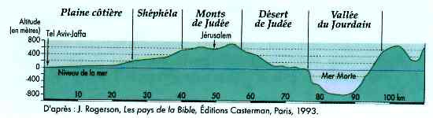
Source: Atlas biblique du voyageur en Terre Sainte, Monde de la Bible, 2007
(Le relief a été volontairement accentué)
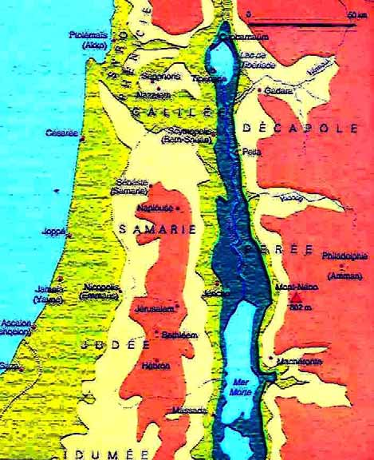
Présentation géographique du Nouveau Testament EBIOR-2010 p. 11 / 91
Ash
Hé
Jéri
Jéru
Naza
Si
Tibé
Beer Sheva
Beth- lehem Eilat Gaza kelon bron cho salem reth chem riade
Ashkelon * 66 66 308 80 58 110 71 153 111 182
Beer Sheva 66 * 71 246 78 48 116 81 220 141 243
Beth-
66 71 * 319 75 28 37 10 145 70 138 lehem
Eilat 308 246 319 * 327 288 287 310 448 369 404
Gaza 80 78 75 327 * 64 129 91 171 130 200
Haifa 151 199 168 450 154 185 147 159 38 93 60
Hébron 58 48 28 288 64 * 69 33 167 91 184
Jéricho 110 116 37 287 129 69 * 36 115 66 115
Jérusalem 71 81 10 310 91 33 36 * 133 60 160
Nazareth 153 220 145 448 171 167 115 133 * 73 29
Sichem- Naplouse 111 141 70 369 130 91 66 60 73 * 102
Tibériade 182 243 138 404 200 184 115 160 29 102 *
Deux saisons principales:
une période d’hiver tempérée et pluvieuse, de novembre à avril, avec un vent soufflant du sud
un été sec et chaud, de mai à octobre, avec un vent du nord qui apporte de la fraîcheur.
Les écarts de température peuvent être très marqués au cours d’une même journée et les conditions régionales varient considérablement:
des étés humides et des hivers doux sur la côte,
des étés secs et tempérés dans les régions montagneuses,
des étés secs et chauds et des hivers agréables dans la vallée du Jourdain,
Présentation géographique du Nouveau Testament EBIOR-2010 p. 12 / 91 des étés torrides et des conditions semi désertiques dans le désert de Judée, entre Jérusalem et Jéricho, ainsi que dans le Néguev et dans la Arava.
VILLE OU RÉGION JANVIER AVRIL JUILLET OCTOBRE
Côte 9-18 12-22 21-30 16-29
Jérusalem 6-12 12-21 19-29 16-25
Tibériade 9-18 13-27 23-37 18-32
Mer Morte 11-20 20-29 28-39 24-32
Eilat 10-21 17-30 26-40 20-33
Constatons, d’après la carte hygrométrique et la carte bio-géographique, l’extrême différence entre les régions climatiques: il pleut moitié moins à Beersheba (200 mm) qu’à Jérusalem (550 mm). Certaines régions sont bien plus arrosées que Paris en France alors que d’autres ne reçoivent que 25 mm d’eau par an, comme la Mer Morte.
On peut distinguer:
•La plaine côtière au climat méditerranéen avec un maximum de 800 mm de
précipitations annuelles.
•Les montagnes centrales, elles aussi au climat méditerranéen, avec un maximum
de 1000 mm de précipitations annuelles, Hébron par exemple en recevant 800
mm et Jérusalem plus de 550 mm. Ce milieu, recouvert à l’origine de forêts de
hêtres, a été fortement dégradé par l’homme depuis la préhistoire.
•Un partie de la dépression du Jourdain et de la Mer Morte, au climat torride, avec
un maximum de 100 mm de précipitations annuelles à Jéricho. Il s’agit d’une
savane subtropicale, où vivent une faune et une flore en partie de type africain:
l’acacia, la gazelle d’Arabie, l’hyène brune et le guêpier d’Orient en sont des
exemples.
Présentation géographique du Nouveau Testament EBIOR-2010 p. 13 / 91
•Entre ces deux dernières régions, s’étend une zone désertique comme le désert de
Judée, de type saharo-arabique.
•Enfin, dans le Néguev, se rencontre la steppe, sablonneuse ou rocailleuse à
mesure que l’on s’élève jusqu’à plus de 1000 mètres d’altitude. On y trouve des
animaux particuliers comme l’outarde ou le loup. Ajoutons les wali, de profondes
gorges taillées par d’anciens cours d’eaux qui, en quelques heures et pour
quelques jours à peine, peuvent se transformer en rivières redoutables. S’y
trouvent le jujubier aux rameaux épineux, un passereau – le roselin du Sinaï et le
bouquetin de Nubie, plus connu sous le nom d’ibex.
Présentation géographique du Nouveau Testament EBIOR-2010 p. 14 / 91
SOURCE: Atlas géopolitique d'Israël, Autrement, 2008, p.9
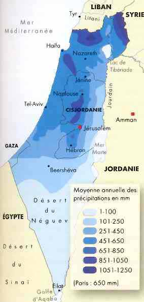
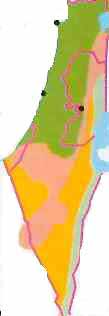
SOURCE: Terre Sainte, Guides Gallimard, p.17
Présentation géographique du Nouveau Testament EBIOR-2010 p. 15 / 91
Nombre de jour
Nombre de jours
Nombre de jours
Nombre de jours de gel
Précipitation (mm)
Mois température > 32 °C ensoleillés de pluie
Janvier 0,7 0 19 107 7,4
Février 0,9 0 19 95 6,7
Mars 0,4 0 23 133 6,6
Avril 0 0,9 27 42 3,4
Mai 0 3 29 30 2,7
Juin 0 3,7 30 0 0
Juillet 0 3,1 31 0 0
Août 0 6,5 31 0 0
Septembre 0 3,6 30 0 0,2
Octobre 0 1,6 29 6 0,7
Novembre 0 0 23 73 4,7
khamsin, vent chaud et sec provenant du désert d‘Arabie. Á Jérusalem, la température, habituellement de 25°C l’après-midi, peut alors atteindre 35°C.
Á Jérusalem, l’été est très sec - aucune pluie pendant quatre mois consécutifs – mais grâce à l’altitude, les nuits restent fraîches avec des températures en-dessous de 20°C. L’après-midi, la température avoisine les 30°C. A cette époque, la température est torride dans la vallée du Jourdain et il vaut mieux voyager par les montagnes de Samarie. Les mois de septembre et d’octobre poursuivent l’été alors que le mois de novembre annonce l’hiver avec une brutale chute de la température et le retour de la pluie. C’est ainsi que la température moyenne maximale à Jérusalem descend de 28°C en septembre à 19°C en novembre lors que la température moyenne minimale descend de 18°C à 12°C.
Sur le lac de Galilée souffle en été un vent d’ouest l’après-midi et le soir, qui apporte un peu de fraîcheur alors qu’en hiver et au printemps, c’est un violent et dangereux vent d’est qui peut provoquer des tempêtes. Les sources chaudes de Tabgha attirent le tilapia, espèce tropicale qui craint le froid, permettant ainsi la pêche à cet endroit en hiver et au printemps.
Printemps Été Automne Hiver
Mer Méditerranée 21 26 22 17
Présentation géographique du Nouveau Testament EBIOR-2010 p. 18 / 91
Petit territoire au nord de la Palestine, sur le versant est de l’Anti-Liban, plus précisément au nord-ouest de Damas, dont la capitale était Abila depuis 34 avant Jésus-Christ. Gouverné au temps de Jésus par le tétrarque Lysanias (Lc 3 1), il fut plus tard attribué au roi Agrippa II ( Ac 25 13) puis incorporé dans la province romaine de Syrie
Nom de la Grèce depuis la réorganisation de l'empereur Auguste en 27 avant
Jésus-Christ. C'est une province sénatoriale (Rm 15,26) dirigée par un proconsul, ancien prêteur. Un d'entre eux est GALLION, le frère de l'écrivain Sénèque, cité à la fois en Ac 18,12 et sur une inscription découverte à Delphes, qui permet de dater sa charge de 51 à 52 après Jésus-Christ. Les villes les plus importantes étaient Corinthe, la capitale administrative et commerciale ainsi qu'Athènes qui restait un centre intellectuel important et prestigieux.
(1) Capitale de la province romaine de Syrie souvent citée dans les Actes des
Apôtres ( 6,5; 11,19 à 22; 13,1; 14,21; 15,22; 15,30; 18,22) ainsi qu'en 2 Tm 3,11. Siège du légat impérial ancien consul, comme Quirinus, ce grand centre commercial et culturel, situé à 500 kilomètres au nord de Jérusalem, constituait par sa population la troisième ville de l'empire après Rome et Alexandrie. Des populations très diverses, syriennes, juives, grecques et romaines s'y côtoyaient. C'est à Antioche que fut fondée la première communauté mixte, composée de juifs et de païens et c'est dans cette ville que les disciples de Jésus, appelés jusqu'alors nazaréens, furent désignés sous le nom de chrétiens, sans doute par les païens (Ac 11,26). Des émeutes anti-juives très violentes s'y produisirent en 39-40 et
(2) Ancienne colonie de vétérans (militaires en retraite) romains, située en
Pisidie, région au centre de l'Asie mineure actuelle et rattachée à la province
Présentation géographique du Nouveau Testament EBIOR-2010 p. 19 / 91 romaine de Galatie. Elle fut évangélisée par Paul et Barnabé (Ac 13,14 et 14,21).
Ou Arimathie. Petite localité de Judée située à environ 35 km au nord-ouest de Jérusalem. Lieu d'origine d'un certain Joseph, qui ensevelit Jésus (Mt 27,57).
Nom donné dans l'antiquité à toute la région située entre la mer Rouge et l'Euphrate, de nature semi désertique mais comportant également des oasis et des routes commerciales. Elle est habitée depuis le IIIème voire le Vème siècle avant Jésus-Christ par les Nabatéens, peuple arabe utilisant la langue et l'alphabet araméen, avec quelques variantes, comme moyen de communication. Leur territoire, devenu vassal de Rome, s'étend depuis Damas vers le Nord, jusqu'à Leukè Komè et Hégra vers le sud dans le Hedjaj, et jusqu'au Nefoud vers l'ouest dans l'actuelle Arabie Saoudite. Leur capitale, Petra, à 180 kilomètres seulement au sud de Jérusalem, est en partie creusée dans le roc. Lors de son apogée sous les règnes d'OBODAS III( ~30 - ~9 ) et ARETAS IV (~9-40), elle atteignit de 20 à 40 000 habitants. De Petra, les routes commerciales continuaient vers Gaza sur la côte et vers Damas au nord. Maître du commerce des produits de luxe provenant d'Orient (épices de l'Inde, soie de Chine, perles de la mer rouge, encens du royaume de Saba au Yémen), les rois nabatéens entrèrent souvent en conflit avec les rois juifs, en particulier OBODAS I contre ALEXANDRE JAMNÉE en ~93-~90 et MALICHOS I contre HÉRODE LE GRAND en ~32. Les Arabes et leurs pays sont cités en Ac 2,11 et en Ga 1,17 ainsi que leur roi ARETAS IV, beau-père d'Hérode le Grand en 2 Co 11,32.
A l'époque romaine, Athènes, sans être la capitale de la Grèce, restait un grand centre culturel, célèbre par ses écoles philosophiques: stoïcisme, épicurisme, platonisme et aristotélisme. Les gens riches, y compris de jeunes romains y venaient parfaire leurs études. Autour de la célèbre colline de l'Acropole où se dressait le Parthénon, temple du Vème siècle avant Jésus-Christ, s'étendaient vers le nord l'agora ou place du marché, où les gens se promenaient et discutaient (Ac 17,17) et vers le nord-ouest, la colline de Mars-Arès ou Aréopage où se réunissaient le conseil et tribunal du même nom. C'est devant cette assemblée (Ac 17,22) que Paul parla du "dieu inconnu", créateur du monde
Présentation géographique du Nouveau Testament EBIOR-2010 p. 20 / 91 et Père de tous les hommes. Les fouilles modernes ont mis à jour l'agora et les trente-cinq marches en pierre, taillées dans le roc, qui conduisaient à la colline de l'Aréopage.
Ou Ionie. Nom de la province sénatoriale du même nom (Ac 20,16), créée en 133 avant Jésus-Christ et dirigée par un proconsul, ancien consul de haut rang.
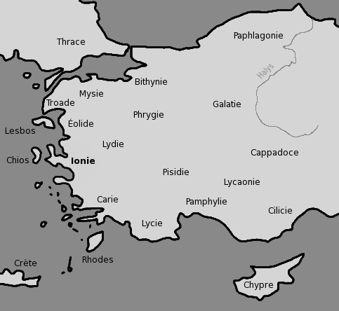
Son territoire, à l'ouest et au sud-ouest de l'Asie mineure actuelle, se constituait de l'Ionie, de la Troade, de la Mysie, de la Lydie, de la Carie et de la Phrygie. Il était fort urbanisé et comprenait une centaine de villes. Sept d'entre elles sont mentionnées dans l'Apocalypse:
1.Éphèse, la capitale (Ap 1,11); 2.Smyrne (Ap 2,8); 3.Pergame (Ap 2,12); 4.Thyatire (Ap 2,18); 5.Sardes (Ap 3,1); 6.Philadelphie (Ap 3,7); 7.et Laodicée (Ap 3,4).
Région appartenant au tétrarque Philippe, actuellement appelée Hauran et constituant une région volcanique fort fertile et peuplée dans le sud-est de la Syrie actuelle, en dessous de la Trachonitide. Sa ville la plus importante, Bostra, deviendra au IIème siècle la capitale de la province romaine d’Arabie.
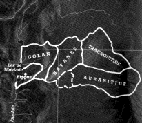
Région au sud-est du lac de Galilée appartenant au tétrarque Philippe, actuellement appelée Ard-el-Bathanyeh et où subsistent intacts de nombreuses
Présentation géographique du Nouveau Testament EBIOR-2010 p. 21 / 91 cités inhabitées aux murs massifs et impressionnants. Sa frontière sud est formée par le torrent du Yarmuk et elle se situe sur la route des pèlerins qui se rendent à Jérusalem en venant de Babylone. Deux endroits sont à signaler: la ville de Béthanie et le village de Kochaba (« le village de l’étoile »), où vivait, selon JULES l’Africain (vers 200 après Jésus-Christ), un clan davidique de retour d’exil de Babylone, appelé les Nazoréens. La Batanée était donc habitée par des juifs babyloniens, excellents soldats (cf. Lc 3,14: les militaires venus se faire baptiser) ce qui justifie l’expression « Judée au-delà du Jourdain « de Mt 19,1 et Mc 10,1 au sens de « pays des juifs ». Á l’époque de Jésus, le chef de cette région, le prince YAKIMOS, vivait en bonne relation avec le tétrarque Philippe (Josèphe, Antiquités juives, 17,23-31).
(1) (*) village de Judée, situé au-delà du mont des Oliviers en bordure de la route de Jéricho, à l'est de Jérusalem (Mc 11,1) et à une distance de 15 stades (Jn 11,18) soit environ deux ou trois kilomètres. Au cours d'un repas que Jésus y prenait dans la maison de Simon le lépreux, une femme versa sur lui un flacon de parfum précieux (Mt 26,6). L'Évangile selon Jean (12,1) rapporte qu'à Béthanie habitaient trois frère et sœurs amis de Jésus: Lazare, Marthe et Marie (ne pas confondre Marie de Béthanie avec les autres Marie). Le nom arabe actuel (El- Azarieth) et le tombeau dit de Lazare mentionné au moins depuis Origène (185 – 254) mais situé sans preuve rappellent encore aujourd’hui que c’est dans cette ville que Jésus ressuscita Lazare (Jn 11,1-44) et qu’il y rencontra les deux sœurs. Cette tombe dite de Lazare, creusée dans le roc et situés sous une église, devait avoir à l’origine une porte au niveau du sol. Aujourd’hui celle-ci est fermée et c’est par un escalier de vingt-deux marches qu’on y accède.
C’est là également que Jésus passa la nuit (Mc 11,11) avant son entrée triomphale à Jérusalem et c’est dans ses environs également qu’eut lieu l’Ascension (Lc 24,50)
(2) (?) Ville de Batanée, plutôt que de Pérée, au-delà du Jourdain où Jean le
Baptiste exerçait son ministère (Jn 1,38), sans doute au bord du torrent du Karit, à identifier avec le Yarmuk. C’est la localisation retenue par EGERIE lors de son pèlerinage en 384 après Jésus-Christ et par des interprétations récentes. Son autre nom d’Ecbatane signifie qu’un clan juif, revenu de Babylone et de Perse pour pacifier la Batanée à la demande d’Hérode le Grand, y habitait.
Présentation géographique du Nouveau Testament EBIOR-2010 p. 22 / 91
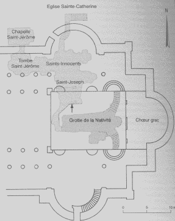
Littéralement " la maison du pain ". Petit village de Judée situé à environ dix kilomètres au sud de Jérusalem, sur la route d’Hébron qui est célèbre comme patrie de David (1S 16,4) qui y naquit, y passa son enfance et y reçut l'onction royale des mains du prophète Samuel, comme lieu de la mort de Rachel en donnant naissance à son fils Benjamin, comme lieu de rencontre entre Ruth et Booz (Rt 2,4) et comme lieu de naissance du Messie annoncé par le prophète Michée (5,1). Mais c'est surtout le lieu de la naissance du Christ (Lc 2,4), dans une grotte déjà citée par Justin, martyr en 165, plutôt que dans l'étable de la tradition occidentale. C’est sur celle-ci, recouverte d'un bois sacré par l'empereur Hadrien en 135 après Jésus-Christ que l’empereur Constantin en 328-330 fit construire la basilique de la Nativité.
Celle-ci fut incendiée en 529 et rebâtie par Justinien (527-565) sous la forme qui existe toujours actuellement. L’aspect extérieur est celui d’une forteresse dont l’entrée, plusieurs fois rétrécie jusqu’à 1,2 mètre de hauteur, oblige tout homme à se courber pour y pénétrer (« Porte dite de l’Humilité »). En forme de croix de 60 m de long sur 30 m de large, la basilique est divisée en cinq nefs par quatre rangées de colonnes et des mosaïques du IV ème siècle sont visibles sous le pavement actuel. A l‘extrémité orientale du chœur se trouve un escalier qui conduit jusqu’à la grotte de la Nativité (en orange sur le dessin), à six mètres sous le niveau du sol de l’église, transformée en une chapelle de douze mètres sur trois environ. Une étoile d'argent à quatorze branches et une inscription latine y rappellent l’Incarnation du Christ (Lc 2,7). (Hic de Maria Virgine Iesus Christus natus est - Jésus Christ naquit ici de la Vierge Marie).
En contrebas, une petite chapelle contient une sorte de mangeoire qui serait l’endroit où Marie déposa son fils.
Présentation géographique du Nouveau Testament EBIOR-2010 p. 23 / 91
A un kilomètre de Bethléem, à Beith Sahour ("le village des pasteurs") ont été construites une église franciscaine et une église grecque orthodoxe qui
Hameau de Judée, situé à proximité de Jérusalem, entre le mont des Oliviers
(Mc 11,1) et Béthanie. Jésus y envoya chercher un ânon pour son entrée à Jérusalem (Mt 21,1).
Littéralement " le lieu de la pêche ". Village de la Gaulanitide situé dans une plaine de trois kilomètres de long au bord du lac de Galilée, sur la rive nord, à deux kilomètres environ à l’est du point où le Jourdain pénètre dans le lac. En l’honneur de Julie, la fille de l’empereur Auguste, le tétrarque Philippe la transforma en une cité du nom de Julias. (JOSEPHE, Antiquités juives,18,28).
Jésus y guérit un aveugle (Mc 8,22) et accomplit dans ses environs la seconde multiplication des pains (Lc 9,10), peut-être sur la colline de Tell Hadar, à trois kilomètres au nord de Kursi.
C’est aussi le lieu de naissance des premiers disciples: André, Pierre et
Philippe. Avec Corozaïn et Capharnaüm (Mt 11,23), ce village est l’objet de sévères reproches de la part de Jésus (Mt 11,21).
Petit village de Galilée à la localisation discutée: Khirbet Qana, monticule situé à 14 kilomètres au nord de Nazareth ou plus habituellement le village de Kafr Cana sur la route qui mène de Nazareth, à sept kilomètres au nord-est vers Tibériade à l’est. C’est là qu’eut lieu le premier miracle et signe de Jésus lors d’un mariage décrit en Jn 2,1-12 ainsi que la guérison du fils du fonctionnaire royal qui était malade à Capharnaüm (Jn 1,45-49). Cana est également le lieu de naissance de l'apôtre Nathanaël qui doutait que le Messie puisse venir de Nazareth.
Nom d'un ville de Galilée, situé à quatre kilomètres à l’ouest de l'embouchure du Jourdain dans le lac de Galilée et à 145 kilomètres au nord de Jérusalem, à la
Présentation géographique du Nouveau Testament EBIOR-2010 p. 24 / 91 population estimée à 1000 ou 1500 habitants. Quand Jésus quitta Nazareth, il choisit ce lieu où Pierre avait sa maison (Mc 2,3 - Mt 8,14) comme lieu de résidence pendant près de deux ans. Jésus s’y sentait si bien que les évangiles en parlent comme si c’était sa propre maison ("sa ville" en Mt 9,1).
C’est là également que Jésus enseigna dans la synagogue (Mc 1,21), qu’il guérit un lépreux (Mt 8,2-4) et la belle-mère de Pierre (Mt 8,14-15), qu’il rendit aux siens un possédé muet (Mt 9,32-34), qu’il arracha à la mort la petite fille de Jaïre, un des chefs de la synagogue, qu’il guérit la femme souffrant d’hémorragies (Mt 9,20-22) ainsi que deux aveugles (Mt 9,27-31), un homme à la main desséchée (Mt 12,9) et le paralytique qui se remit à marcher (Mt 9,2). Le centurion qui demanda à Jésus de guérir son serviteur y habitait également (Lc 7,1) Un bureau de douane où se tenait le futur apôtre Matthieu (9,9) se trouvait également dans ce lieu de passage fréquenté. Et pourtant, avec Béthsaïda et Corozaïn, cette ville est l’objet de sévères reproches de la part de Jésus (Mt 11,21) pour leur incrédulité: il n’en reste aujourd’hui qu’un champ de ruines.
Les fouilles ont permis de dégager une synagogue, une des mieux conservées de Galilée. Bâtie au IIIème siècle, elle forme un vaste quadrilatère de 24 x 16 mètres, de style gréco-romain et orienté vers Jérusalem. Elle se trouve sans doute sur le site de celle qui existait au temps de Jésus (Lc 4,33) et qui est reste visible grâce à son soubassement en basalte noir. Elle aurait été bâtie par ce même centurion (Lc 7,5). A cent mètres de là une structure du Ier siècle fut identifiée à la maison de Pierre depuis les fouilles de 1968. Agrandie et entourée d’une enceinte sacrée au IVème siècle, celle-ci fut transformée en une basilique byzantine octogonale aux nombreux graffiti en plusieurs langues: grec, syriaque, araméen. Une basilique ultramoderne recouvre tous ces vestiges sans les cacher.
Des fouilles récentes ont également découvert l’existence d’une garnison de mercenaires païens, des Phrygiens et des gaulois et non des Romains, dirigés par un commandant au service d’Hérode Antipas. Ils habitaient un quartier en-dehors de la ville, équipé de bains romains typiques et étaient donc impurs aux yeux des juifs. Ceci explique la demande du centurion en Lc 7,6-7: il ne veut pas que Jésus se souille à son contact. Son rôle était de protéger les publicains chargés de la perception des taxe ainsi que l’important centre de communication qu’était Capharnaüm sur la Via Maris.
Présentation géographique du Nouveau Testament EBIOR-2010 p. 25 / 91
(1) Nom d'une immense cité portuaire (une centaine d'hectares) construite au bord de la Méditerranée par le roi Hérode le Grand entre 22 et 10 avant Jésus- Christ, à 90 kilomètres au nord-ouest de Jérusalem. Elle est également appelée Césarée Maritime.
Hérode transforma un ancien site peu développé, la Tour de Straton, pour en faire le plus grand complexe portuaire de son royaume et même de toute la région, grâce à de gigantesques infrastructures artificielles en pleine mer. Hérode y fit bâtir un hippodrome, un théâtre, un amphithéâtre, un palais et un temple d'Auguste et de Rome destiné au culte impérial. Plus tard, la ville devint une colonie romaine, situation rare en Orient, la capitale administrative de la province de Judée au sens administratif (sauf sous le règne d'Agrippa I entre 41 et 44) et la résidence habituelle du procurateur romain – on a retrouvé en 1961 dans le théâtre de Césarée une inscription au nom de Ponce-Pilate, préfet de Judée. Sa population fort mélangée comptait un plus grand nombre de païens que de juifs. De nombreux conflits éclatèrent entre les deux groupes, en particulier sous le procurateur Felix. En 61 après, Jésus-Christ, l'empereur Néron priva les juifs de leurs droits et en 66 après Jésus-Christ, ceux-ci furent massacrés par les nonjuifs, 20000 selon JOSÈPHE, Guerre des Juifs,2,457). Ce fut le début de la grande insurrection. Antioche est citée lors de l’épisode du centurion Corneille, païen craignant Dieu qui rencontra Pierre (Ac 10,1) et comme point de débarquement de Paul (Ac 18,22). Les vestiges de l'aqueduc romain y sont encore visibles
(2) (*) Une autre ville, située à 46 km à l'est de Tyr au pied du Mont
Hermon, le plus haut sommet de toute la région (2780 m) et à plus de 520 mètres au-dessus du lac de Tibériade, dans un site très fertile près de la source orientale du Jourdain.Elle est également appelée Césarée de Philippe.
Hérode le Grand y fit construire vers 20 avant Jésus-Christ un temple en l'honneur d'Auguste comme à Césarée Maritime et à Samarie-Sebasté. Ce fut également la capitale de son fils, le tétrarque Philippe qui l’agrandit vers 3-2 avant Jésus-Christ et la rebaptisa en l’honneur du même empereur César Auguste. C’est dans ses environs que Pierre professa sa foi (Mc 8,27; Mt 16,16) à la demande de Jésus. qui lui adressa ensuite la fameuse injonction "Tu es Pierre et sur cette Pierre, je bâtirai mon église." (Mt 16,18).
Présentation géographique du Nouveau Testament EBIOR-2010 p. 26 / 91
Cette cité s’appelle aujourd’hui Banyas, nom arabe de la ville hellénistique de
Paneas qui tire son nom d'une grotte dédiée à Pan, le dieu grec de la nature, où se trouvaient les sources du Jourdain. Par la suite, le nom ancien de Paeneas remplaça celui de Philippe et la population non juive continua d'y être majoritaire.
L’historien de l’Église, EUSEBE de Césarée (265-340) rapporte dans son
Histoire Ecclésiastique,7,18 qu’il a vu dans cette ville la maison et la statue de la femme souffrant d’hémorragies qui avait été guérie par Jésus (Mc 5,24-27). Aux yeux des juifs, elle devait doublement être impure, comme païenne et pour ses pertes de sang.
Ile de la mer Méditerranée, qui apparaît en Ac 4,36; 11,19-20; 13, 4 (lieu de la première mission de Paul); 15,39; 21,3 (troisième mission de Paul) et 27,4. Cette province sénatoriale romaine dirigée par un proconsul comportait deux cités importantes, Salamine, port en relation avec la Syrie (Ac 13,4) et Papphos (Ac 13,6), où siégeait le gouverneur. L'île présentait des liens étroits avec la dynastie hérodienne. Grâce à la faveur de l'empereur Auguste, Hérode le Grand reçut une partie des revenus des mines de cuivre de Chypre. L’importante colonie juive de Chypre dont est issu Barnabé (Ac 4,36) subit sous Trajan le même sort que celle de Cyrène.
Région du sud-est de l'Asie mineure, bordée à l'ouest par la Pamphylie et la
Pisidie, au nord par la Lycaonie et à l'est par la Syrie. Paul était originaire de Tarse (Ac 9,11), capitale de la Cilicie, ville importante et célèbre (Ac 21,39) par son activité intellectuelle
Ou Chorozaïn. Petite village de Capharnaüm. Une plus petite synagogue y a été découverte ainsi qu’une chaise d’honneur en pierre, au dossier surélevé, qui doit correspondre à la chaire de Moïse citée en Mt 23,2. Avec Béthsaïda et Capharnaüm (Mt 11,23), il est l’objet de sévères reproches de la part de Jésus (Mt 11,21).
Citée en Ac 18,1; 1Co 1,2; 2Co 1,23 et 2Tm 4,20, la capitale de l'Achaïe est située sur l'isthme de 6,5 kilomètres de long qui relie le Péloponnèse au reste
Présentation géographique du Nouveau Testament EBIOR-2010 p. 27 / 91 de la Grèce. Ses deux ports, Cenchrées à l'est et Lechée à l'ouest en font le plus grand centre commercial grec. Paul arriva à Corinthe en l'an 52 sous le proconsulat de GALLION et y demeura environ un an et demi, fondant une communauté chrétienne à laquelle il adressa plus tard deux lettres célèbres. Les fouilles de la fin du XIXème siècle ont mis à jour l'agora ou place du marché, l'estrade du tribunal ou Paul a comparu sans doute devant GALLION ainsi que deux inscriptions, l'une mentionnant sur un linteau de porte "la synagogue des hébreux" (Ac 18,17), l'autre un certain ÉRASTE qui est peut-être le trésorier cité en Rm 16,23.
Cette ville d'Afrique du Nord, située à l'ouest du delta du Nil en Lybie (Ac
2,10), est la capitale de la province romaine sénatoriale de Cyrénaïque. Elle comptait depuis le IIIème siècle avant Jésus-Christ une communauté juive importante et influente. Les Juifs cyrénéens avaient une synagogue à Jérusalem (Ac 6,9). Cyrène était également la localité d'origine d'un certain Simon, qui fut réquisitionné (Mc 15,21) pour aider Jésus à porter sa croix. Outre Simon, des juifs de Cyrène habitaient à Jérusalem (Ac 2,10; 6,9) et à Antioche ( Ac 11,20; 13,1).
Deux insurrections juives anti-romaines se produisirent à Cyrène en 70 et en
115-117 après Jésus-Christ.
Parfois considérée comme la plus vieille ville du monde habitée sans interruption, Damas, située dans une immense oasis à 700 mètres au-dessus du niveau de la mer, fut la capitale de la Syrie avant la fondation d'Antioche par les rois grecs séleucides au III ème siècle avant Jésus-Christ.
A la période romaine elle fut parfois englobée dans la Décapole et même contrôlée temporairement par ARETAS III (~84 - ~62), le roi nabatéen. Son successeur ARETAS IV, sans l'occuper nécessairement, y tenait un rôle important à l'époque de Paul ( 2Co 11,32) puisqu'il voulut s'emparer de lui.
La ville est également citée lors de la conversion de l’apôtre des gentils en
Ac 9,2-3; 9,22; 26,12 ainsi qu'en Ga 1,17. Au cœur de la vieille ville subsiste encore aujourd'hui la Rue Droite citée en Ac 9,11 même si elle est plus étroite actuellement et située plus haut que dans l'antiquité. On y voit, à cinq mètres de
Présentation géographique du Nouveau Testament EBIOR-2010 p. 28 / 91 profondeur, une chapelle qui pourrait être la maison d'ANANIAS qui accueillit Paul lors de sa cécité temporaire. (Ac 9,10)
Au début de la grande révolte, plus de dix mille juifs de Damas furent massacrés par la population non-juive. (Flavius JOSEPHE, Guerre des Juifs,2, 561).
District ne faisant pas partie de la Palestine et comprenant traditionnellement dix villes (en grec "deka polis"), situées principalement à l'est du Jourdain: du nord au sud, Hippos, Gadara (Mt 8,28), Scythopolis (par exception à l’ouest du Jourdain), Pella, Gerasa (Mc 5,1),
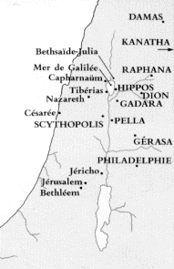
Philadelphie, l’actuelle Aman, capitale de la Jordanie ainsi
que d’autres villes au nord-est moins connues en lettres capitales sur la carte ci-contre: Canatha, Dion et Raphana. Damas y est parfois incluse. Le nombre exact, l'identification et l'étendue de ces cités restent incertains.
"Près de la Judée, du côté de la Syrie, est la Décapole, ainsi nommée du nombre de ses villes, sur lequel tous les auteurs ne sont pas d'accord " (PLINE l'Ancien). La ligue disparut après la création de la province d'Arabie par l'empereur Trajan, au cours du IIème siècle après Jésus-Christ.
La Décapole était habitée principalement par des Grecs et avait reçu, lors de la conquête romaine, certains privilèges comme de ne pas être une province mais une ligue de cités autonomes sous le contrôle du gouverneur de Syrie. Bien que principalement habitée par des païens, Jésus s’y rendit car il y était connu (Mt 4,25) et y guérit un sourd-muet (Mc 7,31).
Une tradition remontant au Vème siècle et qui reste la plus plausible (Yatta, à
l’ouest de Jérusalem comme le lieu de la Visitation (Lc 1,39-40) et comme le
Présentation géographique du Nouveau Testament EBIOR-2010 p. 29 / 91 village natal de Jean le Baptiste. En effet, son père Zacharie servait au Temple et sa demeure devait en être proche. Deux églises y ont été construites:
L’église de la Visitation, sur une colline tout proche du village et sur un ancien sanctuaire du Vème siècle où Élisabeth aurait choisi de vivre jusqu’à la naissance de son fils. On y commémore la visite de Marie, sa cousine, et sur un des murs, s’inscrit la célèbre bénédiction du Magnificat en plus de quarante langues
L’église de Saint Jean-Baptiste, au centre du village, sur une grotte sacrée reconnue habituellement comme le lieu de naissance de Saint Jean-Baptiste et la maison d’été de Zacharie et de sa femme Élisabeth (Lc 1,5-13). C’est le plus ancien témoignage de son culte puisque cette église est bâtie sur un ancien sanctuaire du IVème siècle.
Village de Judée où deux pèlerins, dont l'un se nommait Cleophas, cheminèrent avec le Christ sans le reconnaître (Lc 24,13-35). Découragés après la crucifixion, ce n'est qu'après son départ qu'ils comprirent son identité.
Cet endroit est souvent identifié depuis Origène (185-254) et Jérôme (347-
420) avec le site d’Amwas, situé à trente kilomètres à l’ouest de Jérusalem sur la route qui conduit à la plaine côtière ce qui correspond aux 160 stades mentionnés dans certains manuscrits de Lc 24,13. Comme la majorité des manuscrits mentionne seulement 60 stades soit 11 kilomètres, d’autres localisations ont été proposées comme celle d’El-Kubeileh au bord d’une route romaine et au nordouest de Jérusalem.
Ancienne colonie grecque refondée plus au sud par Lysimaque, l’un des généraux d’Alexandre, pour y creuser un nouveau port et éviter l’envasement. Capitale de la province sénatoriale d’Asie dirigée par proconsul ancien consul, Éphèse était à la fois une métropole fort peuplée à la population estimée à 200
l’Occident et l’Orient, un centre de culture grecque fort célèbre (le philosophe Héraclite y vit le jour et Apollonios de Tyane y mourut à la fin du premier siècle) et un important centre cultuel avec son temple d’Artémis, déesse de la chasse et de la fécondité, Diane pour les Romains.
Présentation géographique du Nouveau Testament EBIOR-2010 p. 30 / 91
Celui-ci, détruit par un incendie criminel la nuit de la naissance d’Alexandre le Grand en 356 avant Jésus-Christ, fut reconstruit à environ un kilomètre et demi au nord-est de la ville sur une grande plate-forme de 127 mètres sur 71 mètres avec une dimension intérieure de 104 mètres de long sur 50 de large. Avec ses 127 colonnes ioniennes de 18 mètres de haut, il était réputé comme l’une des sept merveilles du monde (Ac 19,23 et 34). On y gardait une statue de la déesse prétendue tombée du ciel (Ac 19,35), la tête entourée d’une sorte de panier et au torse orné de plusieurs rangées de mamelles. Des Asiarques, magistrats et prêtres annuels qui présidaient les jeux sacrés célébrés en commun à Éphèse par les villes grecques d'Asie, sont cités en Ac 19,31 et le commerce de la ville s’appuyait entre autre sur les orfèvres fabricant des petites répliques en argent du temple et de la statue de la déesse. Ce sont eux, dirigés par un certain Démétrios qui s’opposèrent à Paul qui travailla dans la ville pendant plus de deux ans (Ac 19,10) et y fonda une solide communauté chrétienne (Ac 19,18-20).
Jésus confia sa mère Marie à Jean l’évangéliste qui l’aurait emmenée à
Éphèse où elle aura sans doute passé ses dernières années dans une petite maison située à 8 kilomètres du centre de la ville, sanctuaire vénéré à l’heure actuelle par les chrétiens et par les musulmans.
La ville fut touchée en 17 après Jésus-Christ par un tremblement de terre et son temple, pillé par Néron fut incendié par les Goths en 262 après Jésus-Christ. C’est la métropole antique la mieux conservée aujourd’hui sur une superficie d’environ 400 hectares avec sa célèbre bibliothèque de Celsus, érigée sur deux étages entre 110 et 135 après Jésus-Christ, son gigantesque théâtre pouvant accueillir 24 000 spectateurs, lieu de rencontre des foules où eut lieu le complot monté par Démétrios qui y entraîna Gaius et Aristarque, les compagnons de Paul et auquel mit fin le secrétaire de l’assemblée (Ac 19,35-40). On y découvre également de nombreuses voies rectilignes dont celle de 800 mètres de long qui conduit du théâtre au port et un temple dédié au culte de l’empereur où se trouvait une statue de Domitien, l’empereur qui bannit Jean sur l’île de Patmos et persécuta les chrétiens à l’époque de l’Apocalypse.
Au premier siècle, Éphèse comptait une importante communauté juive qui y formait une politeuma, une sorte de cité dans la cité, permettant à ses membres de s'intégrer dans le monde gréco-romain sans être citoyen de la cité au sens strict et tout en conservant ses caractéristiques propres, religieuses et culturelles.
Présentation géographique du Nouveau Testament EBIOR-2010 p. 31 / 91
Région centrale de l’Asie mineure dont le nom provient d’un peuple celte, les
Galates, qui s’y est établi au III ème siècle avant Jésus-Christ. La province romaine de Galatie, constituée en 25 avant Jésus-Christ et dont la capitale est Ancyre (moderne Ankara) englobait également les régions environnantes de Pisidie et de Lycaonie au sud.
Lors de ses voyages missionnaires, Paul séjourna à Antioche de Pisidie (Ac
13,14) ainsi que dans trois villes de Lycaonie:
•à Iconium (Ac 14,1), •à Lystre (Ac 14,6) •à Derbé (Ac 14,20).
Il y prêcha et il y fonda des communautés chrétiennes.
Présentation géographique du Nouveau Testament EBIOR-2010 p. 32 / 91
Source: Atlas biblique du voyageur en Terre sainte, Prions en Eglise, hors série 2007, p.28
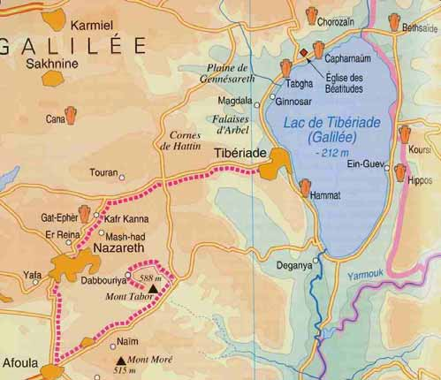
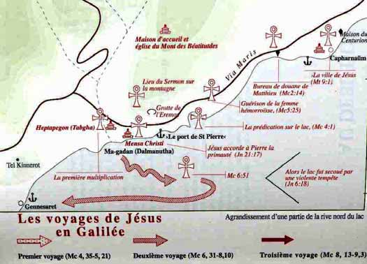
Source: Bargil PIXNER o.s.b, Avec Jésus à travers la Galilée d'après le Cinquième
Évangile, Corazin, Israël, 1992
Présentation géographique du Nouveau Testament EBIOR-2010 p. 33 / 91
Source: Carte des pèlerins de la Terre Sainte, Ministère du tourisme d'Israël, Jérusalem
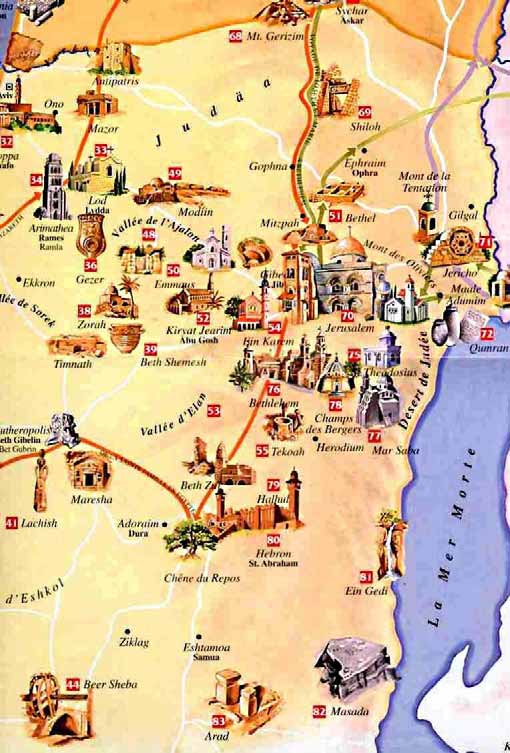
Présentation géographique du Nouveau Testament EBIOR-2010 p. 34 / 91
En hébreu: le " district (des nations) " parce que situé loin de
Jérusalem, ouvert sur les nations voisines et parce que les Assyriens au VIIème siècle avant Jésus-Christ y avaient établi beaucoup de colons étrangers. Région septentrionale de la Palestine bordée au nord par les territoires de Tyr et de Sidon et au sud par la Samarie, elle comprend la Basse-Galilée au sud (Nazareth: 500 m, mont Thabor 580 m) et la Haute- Galilée, région montagneuse atteignant les 1050 mètres. Dirigée au temps de la naissance de Jésus par Hérode le Grand, sa population était fort mélangée et le climat agréable avec des précipitations pouvant atteindre près de 1000 millimètres par an, soit autant que dans les Alpes. Jésus y
Si les bourgs de Nazareth (Mc 1,9), de Cana (Jn 2,1) et de Naïn (Lc 7,11) n'avaient aucune importance historique, les localités du lac de Galilée, appelé aussi mer de Galilée ou lac de Génésaret) (Mc 1,16; Jn 6,1 ) étaient actives et prospères: Magdala, Capharnaüm, Génésaret, Bethsaïda, Corozaïn et surtout Tibériade, résidence du tétrarque de Galilée et de Pérée, Hérode-Antipas jusqu’en 39 après Jésus-Christ. Le lac de Galilée se situe à 210 mètres en dessous du niveau de la mer et mesure 20 kilomètres de long sur 12 kilomètres de large. Pendant l’hiver 1986, on a découvert dans le lac un exemplaire unique de barque romaine de pêche qui pourrait avoir été utilisé entre la fin du 1er siècle av. J. C. et la seconde moitié du 1er siècle de notre ère. Ce bateau de quinze mètres de long et de deux à trois mètres de large pouvait transporter une quinzaine de personnes. De Galilée sont originaires tous les apôtres sauf peut-être Judas.
Habitant de la Galilée, parfois avec un sens péjoratif ou méprisant (Lc
22,59).
Présentation géographique du Nouveau Testament EBIOR-2010 p. 35 / 91
Région actuellement appelée Golan constituant les territoires de Philippe le tétrarque les plus à l’ouest. La ville de Gamla (" le chameau ") fut fortifiée par Flavius Josèphe comme un des centres de la révolte juive et fut prise par les Romains en 68 après Jésus-Christ. Césarée de Philippe, l'ancienne Paneas, représente une autre ville importante.
Littéralement " le jardin du prince ". Localité située (Mt 14,34 – Mc 6,53) sur la rive nord-ouest du lac de Galilée (souvent appelé lac de Génésaret cf. Lc 5,1), entre Magdala et Capharnaüm, dans une petite plaine très fertile de six kilomètres de long sur trois de large.
Actuellement Djerach en Jordanie. Ville de la Décapole située à environ cent kilomètres au nord-est de Jérusalem, et soixante kilomètres au sud-est du lac de Galilée. Une communauté juive y habitait en harmonie avec les autres habitants.
L’expression pays des Gadaréniens (Mc 5,1) ou des Géraséniens (Lc 8,26) a été comprise de différentes manières, par exemple comme habitant de la ville de Gerasa. Toutefois il pourrait plutôt s’agir de la transcription grecque de l’hébreu « Gerashim », « les expulsés ». En effet, d’après le Talmud de Jérusalem et d’après Origène, cette région de l’Hippène était habitée par des Gergésites, expulsés d’Israël lors de la conquête de Josué (Jg 3,10: « Dieu expulsera de vous les Gergésites »)
Ville de Judée à 40 kilomètres au sud-ouest de Jérusalem, Hébron est surtout connue comme le lieu appelé Makpela, du tombeau des patriarches (Abraham, Isaac, Jacob) et de leurs femmes (Sara, Rebecca et Lea). Autour d'un mausolée surplombant une grotte aménagée en crypte, Hérode le Grand fit construire une magnifique enceinte, du même type que celle du Temple de
Jérusalem.
Présentation géographique du Nouveau Testament EBIOR-2010 p. 36 / 91
Seule forteresse à porter le nom du roi Hérode le Grand qui la fit construire à partir de 37 avant Jésus-Christ, à cinq kilomètres au sud-est de Bethléem et à la limite du désert de Juda. Elle s’inscrit dans un ensemble plus vaste comprenant les palais forteresses de Jéricho, de Massada et de Machéronte ainsi que la forteresse Antonia qui domine le Temple de Jérusalem. L’Hérodion se présente comme une colline naturelle de forme cylindrique, rehaussée et fortifiée par quatre tours, circulaires et semi-circulaires disposées aux quatre points cardinaux. Il comprenait des cours intérieures, des jardins, des thermes et des salles de réception. Selon Flavius Josèphe (Antiquités juives, XVII,10) c’est dans cette forteresse qu’Hérode fut enterré mais sa sépulture n’a été découverte que très récemment, en 2007.
Région située au sud de la Judée dans la direction du désert du Néguev, citée en Mc 3,8. Le roi Hérode le Grand en était originaire par ses ancêtres et l’avait annexée à son royaume. Son fils Archélaos l’obtint en héritage en même temps que la Samarie et la Judée. L'une des cités principales était Adora, à 8 kilomètres au sud-ouest d'Hébron, à la population majoritairement juive. Précisons que l'ancien Edom s'étendait au sud-est de la Mer morte alors que l'Idumée de même nom, s'étendait au sud-ouest de la Mer Morte
Surnom donné à Judas. La signification de ce nom d'Iscariote est peut-être celle de l'hébreu " ish qarioth ", qui veut dire "homme de Qarioth", un village de Judée. Dans ce cas, Judas serait le seul apôtre à ne pas être galiléen.
Au temps de l'Ancien Testament, nom que porta le royaume du nord après le schisme de 931 avant Jésus-Christ. Il était encore unifié sous David (environ 1010-970) et Salomon (environ 970-931). Le royaume de Juda au sud eut pour capitale Jérusalem, et celui du nord (Israël) eut pour capitale Samarie. Cette ancienne signification politique n’est pas reprise dans le Nouveau Testament où Israël désigne le peuple juif (Mc 12,29; 15,32).
Présentation géographique du Nouveau Testament EBIOR-2010 p. 37 / 91
Ville de Judée, située dans la vallée du Jourdain à 270 mètres en dessous du niveau de la mer, à un endroit très fertile parmi les jardins et les palmeraies. Jéricho fut reconstruite près d'une ancienne cité du même nom par Hérode le Grand qui s’y fit bâtir un magnifique palais pour en faire sa capitale hivernale. Elle était reliée à Jérusalem par une route de 25 kilomètres à travers le désert de Judée et de près de mille mètres de dénivellation (d’où l’expression " descendre de Jérusalem à Jéricho " en Lc 10,30) ce qui pouvait mettre les voyageurs à la merci de brigands. Jésus y guérit un aveugle (Mt 20,30; Lc 18,35). Un poste de douane dont le responsable au temps de Jésus s’appelait Zachée (Lc 19,1) s’était établi dans cette ville célèbre par son baume et ses fruits tropicaux au trafic commercial considérable, la plus importante cité de Judée après Jérusalem.
En hébreu Yafo. Nom biblique qui signifie " la belle " de l’actuelle ville de
Jaffa, sur le littoral d’Israël. Utilisée par SALOMON comme port de transport pour les cèdres du Liban servant à la construction du Temple (2Ch 2,6), Joppé fut conquise lors de la révolte de Maccabées et détruite lors de la grande révolte juive par Vespasien qui y installa une garnison romaine. C’est dans cette ville qu’eut lieu la résurrection de la veuve nommée Tabitha (Ac 9,36-42) et c’est là que saint Pierre reçut la vision de Dieu lui demandant de ne pas distinguer entre aliment pur et impur, et par conséquent entre juifs et païens (Ac 10,10-16)
Fleuve de Palestine (" Le Descendeur") qui coule du nord au sud dans la plus profonde dépression terrestre, descend du massif de l'Hermon en Syrie, traverse ensuite le petit lac Hulé, aujourd’hui disparu, à 68 mètres au-dessus du niveau de la mer puis le lac de Génésareth (210 mètres en dessous du niveau de la mer) et se jette enfin dans la mer Morte ( - 400 mètres) après plus de trois cent kilomètres de méandres pour une longueur de cent kilomètres à vol d'oiseau. Sur la fin de son parcours, ce n'est plus qu'un mince ruban d'une trentaine de mètres de largeur. La vallée du Jourdain est soit verdoyante et luxuriante au climat subtropical, soit pratiquement désertique, contrairement au reste du pays. Jean le Baptiste faisait faire dans le Jourdain un baptême de conversion (Mc 1,15 – Jn 1,28). C’est le fleuve biblique par excellence, la rivière sainte dont le rôle est capital dans l’histoire d’Israël: Jésus y fut baptisé par Jean (Mt 3,13-17; Mc
Présentation géographique du Nouveau Testament EBIOR-2010 p. 38 / 91
1,9-11; Lc 3,21-22; Jn 1,29-34), à dix kilomètres à l'est de Jéricho selon la tradition la plus répandue.
Terre ravinée, dure et ingrate, au climat chaud et aride, généralement accidentée avec des hauteurs dépassant 1010 mètres près d’Hébron et s’étendant sur une longueur de quarante kilomètres.
Du point de vue géographique, elle constitue la partie méridionale de la
Palestine, limitée à l'est par le Jourdain et la mer Morte, au sud par l'Idumée, à l'ouest par la mer Méditerranée, au nord par la Samarie. Aux portes de Jérusalem commence le redoutable désert de Juda qui descend régulièrement vers la vallée du Jourdain et vers la mer Morte, avec une dénivellation de pratiquement 1400 mètres.
Depuis le retour de l'exil, ce terme désigne au sens strict les territoires autour de Jérusalem habités par les juifs (Lc 2,4) mais aussi au sens large l’ensemble Judée – Samarie – Idumée (7300 km2) qui fut réduit en province romaine à partir de 6 après Jésus-Christ (Lc 3,1; 5,17; Jn 4,3; Ac 9,31). À l'époque du Christ, dans la langue des Grecs, le mot Judée désigne également tout pays habité par des juifs (Lc 1,5; 4,44; 6,17: Ac 10,37), soit l'ensemble Judée – Samarie – Idumée plus la Galilée et d'autres territoires au nord, comme la Batanée. Les deux sens se retrouvent chez le même auteur, en particulier chez saint Luc, et doivent être soigneusement distingués.
Villes importantes: Jérusalem, la capitale, Bethléem, la ville de David,
Hébron, le lieu de séjour d'Abraham et Jéricho, la ville des palmiers. La Judée fut dirigée au temps de Jésus par Hérode le Grand puis par son fils Archélaos (4 avant – 6 après Jésus-Christ).
Après le règne d’Agrippa I qui reconstitua dans son intégralité de 41 à 44 le royaume de son grand-père Hérode le Grand, la province romaine de Judée au sens large regroupa les cinq régions: Galilée, Samarie, Judée, Idumée et Pérée jusqu’à la grande révolte juive de 66 après Jésus-Christ.
Lieu sur la côte occidentale du lac de Galilée où Jésus a exorcisé l’esprit impur d’un homme possédé d’une multitude de démons en les expulsant dans un
Présentation géographique du Nouveau Testament EBIOR-2010 p. 39 / 91 troupeau de porc (Lc 8,26-39). Kursi était un village païen, dépendant de la ville grecque d’Hippos, une des cités de la Décapole, qui apparaît en Mc 5,14 sans être expressément mentionnée. Il faisait partie du pays des Géraséniens qui se trouve vis-à-vis de la Galilée (Lc 8,26). Depuis 1970, un important complexe byzantin y a été mis à jour, comportant une église et un monastère, un des plus grands de la région. En 1980, fut découverte « la chapelle du miracle des porcs », édifice construit pour protéger un gros rocher, considéré comme l’endroit où les porcs se sont précipités dans le lac, lors de la guérison du démoniaque par Jésus
Région de l'Asie mineure, bordée à l'ouest par la Pamphylie et par la Pisidie, au nord par la Galatie, au sud par la Cilicie et à l'est par la Cappadoce. Lors de son premier voyage, Paul s'est rendu dans trois villes de Lycaonie: à Iconium, l'actuelle Konya (Ac 14,1-4) puis à Lystres d'où il a du s'enfuir (Ac 14,19-20) et enfin à Derbé (Ac 14,26). À son époque, la Lycaonie dépendait administrativement de la Galatie.
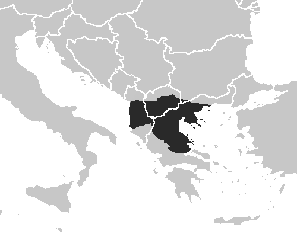
En latin Macedonia. Fondée en 146 avant
Jésus-Christ, la province romaine de Macédoine était gouvernée par un ancien prêteur, depuis la réorganisation d’Auguste en 27 avant Jésus-Christ, sauf de 14 à 44 après Jésus- Christ où elle devint une province impériale dirigée par un légat propréteur. Son territoire s’étendait sur plusieurs régions de plusieurs pays actuels dont les dénominations peuvent prêter à confusion:
Présentation géographique du Nouveau Testament EBIOR-2010 p. 40 / 91
oLa région de Macédoine occidentale sans accès à la mer Égée et avec la
ville de Pella oLa région de Macédoine centrale avec la ville de Thessalonique et la
presqu’île de Chalcidique oUne petite partie de la région de Macédoine orientale avec les villes
d’Amphipolis et de Philippes oLa région de Thessalie au sud
Les trois dernières régions offrent un accès à la mer Égée
• République de Macédoine (FYROM pour l’ONU actuellement)
oPrès des deux tiers du territoire actuel, sans accès à la mer et sans la
capitale actuelle, Skopje dans le Nord
oToute la région centrale du pays avec accès à la mer Adriatique
La Macédoine est citée en Ac 16,9; 19,21; Rm 15,26; 2Co 7,5 et 8,1.
Saint Paul séjourna dans plusieurs cités de cette province: à Néapolis, Philippes, Amphipolis, Thessalonique (Ac 17,1) et Bérée (Ac 17,10).
Bourg situé sur la rive occidentale du lac de Galilée, à cinq kilomètres au nord de Tibériade. Une femme appelée Marie en était originaire (Mt 27,55; Mc 15,40) et fut surnommée la Magdaléenne ou Madeleine après avoir été délivrée par Jésus (Lc 8,2). C’est l’origine de ce prénom.
Ce petit village de Galilée situé au sud du mont Thabor n’est cité qu’en
église catholique y commémore cette miraculeuse résurrection.
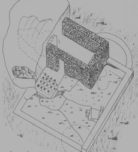
Petite bourgade de Galilée (100 à 150 habitants à
l'époque du Christ?), au milieu des collines, à 110 kilomètres
au nord de Jérusalem et à 30 kilomètres à l’ouest du lac de
Galilée. Elle n’apparaît ni dans l’Ancien Testament ni dans le
Présentation géographique du Nouveau Testament EBIOR-2010 p. 41 / 91 datée d’environ trois cent ans après le Christ, découverte en 1962 dans les ruines de Césarée et conservée depuis au musée archéologique de Jérusalem. Elle contient une liste de famille sacerdotales de l'époque romaine tardive.
Nazareth est la résidence de Marie, mère de Jésus et de Joseph (Mt 2,23; Lc
2,39; Jn 1,43).
La basilique moderne de l’Annonciation à deux étages, construite à partir de
1960 et dédicacée en 1968, représente la plus grande église catholique du moyen orient (44 mètres sur 27). Elle englobe une église byzantine et un édifice antérieur que la découverte d'une base de colonne portant l'inscription grecque "Réjouis-toi, Marie" permet de dater du IIIème siècle. On y a également mis à jour " la maison de Marie " constituée
•d’une grotte naturelle creusée dans le roc, toujours visible en dessous
de la basilique
•et devant l’ouverture de cette grotte, d’un espace entouré par trois
murs de 2,5 à 3 mètres de haut, qui ont été transférés à Lorette (Italie)
depuis 1294. Les fouilles de 1962 ont permis de comparer les graffiti
judéo-chrétiens de la Sainte Maison de Lorette avec ceux sur les parois
de la grotte de Nazareth, datés du IIème siècle.
Trois autres bâtiments ont également été trouvés à Nazareth, l'église construite sur le site traditionnel de la synagogue où se rendait Jésus (Mt 13,54- 58; Mc 6,1-6; Lc 4,15-30) et l'église grecque orthodoxe dédiée à l'archange Gabriel dans laquelle coule l'unique source d'eau de Nazareth. Ce serait, selon une tradition orthodoxe, le lieu de la rencontre avec la Vierge Marie (Lc 1,26-38). Tout récemment, fin 2009, des fouilles archéologiques israéliennes ont mis au jour les restes des murs d'une maison datant du temps de Jésus, à moins d'une centaine de mètres de la grotte de l'Annonciation et de l'église-synagogue. Cette découverte confirme l'existence d'un village à Nazareth à cette époque.
La bourgade ainsi que la Galilée tout entière n’avait pas bonne réputation auprès des juifs de Jérusalem. (Jn 1,46; 7,52).
Toutefois, une hypothèse récente (Bargil PIXNER) fait de Nazara-Nazareth le lieu de résidence d'un clan davidique, revenu de Babylone à la fin du IIème siècle avant Jésus-Christ. Son nom viendrait de "netzer, le rejeton" (de Jessé) en Is
Présentation géographique du Nouveau Testament EBIOR-2010 p. 42 / 91
11,1. L'expression "nazoréen ", trouvée en Mt 2,23 signifierait alors "fils de David" et non "habitant de Nazareth".
A l’époque du Christ, cette région géographique en forme de trapèze s’étendait sur 220 kilomètres du nord au sud et sur 50 à 100 kilomètres au maximum d’est en ouest soit approximativement une superficie de 20 000 kilomètres carré comparable à celle de la Sicile actuelle. Elle comprenait une population de 600 000 à 1 000 000 d'habitants environ, soit une densité assez dense pour l’époque antique et était divisée administrativement en cinq parties:
À l’ouest du Jourdain, du nord au sud,
•la Galilée, la Samarie, la Judée, l’Idumée
À l’est du Jourdain,
•la Pérée.
Pour des raisons historiques, car elles ont parfois eu des souverains identiques ou issus de la famille d’ Hérode, les régions du nord-est: Auranitide, Batanée, Gaulanitide (Golan) et Trachonitide peuvent s’y ajouter.
Mais les villes de la côte philistine ainsi que de la Décapole en sont exclues.
C’est un pays montagneux aux régions fortement différenciées par le climat et le
relief.
Le terme de Palestine n’apparaît pas dans le Nouveau Testament car la
province de Syrie-Palestine n’a été créée par les romains qu’au IIème siècle, après l’échec de la révolte juive de 135 après Jésus-Christ. N’utilisons donc pas les dénominations anciennes à des fins politiques modernes. L’interdiction ordonnée aux juifs par l’empereur Hadrien de séjour à Jérusalem, transformée en colonie romaine du nom d’Ælia Capitolinaainsi que l’inclusion de la Pentapole philistine qui lui a donné son nom ont rendu la population juive minoritaire dans cette nouvelle province de rang plus élevé que l’ancienne Judée. Elle avait en effet à sa tête un gouverneur impérial de rang prétorien et non plus un procurateur et une garnison d’une légion (X Fretensis) résidait en permanence à Jérusalem. Une autre légion, la VI Ferrata, stationnait à Caparcotna en Galilée, également appelée Legio pour cette raison.
Présentation géographique du Nouveau Testament EBIOR-2010 p. 43 / 91
Région du sud de l'Asie mineure, bordée à l'est par la Cilicie, à l'ouest par la
Lycie et au nord par la Pisidie. Paul s'est rendu deux fois dans la capitale de Pamphylie, la ville de Perge lors de son premier voyage (Ac 13,13-14 et 14,24- 25). Il embarqua ensuite depuis le port d'Attalia (Ac 14,24) pour se rendre à Antioche de Syrie.
Littéralement " au-delà " (du Jourdain). Cette région se présente comme un haut plateau peu peuplé et creusé par de puissants torrents. Elle s'étend à l'est du Jourdain, de Pella au nord et de Philadelphie à l’est jusqu'au cours de l'Arnon au sud, sous l'autorité d'Hérode-Antipas, également tétrarque de Galilée qui y fonda la ville de Julias (ou Livias). Les juifs étaient minoritaires dans sa population. L'ensemble Galilée - Pérée s'étendait sur environ 3200 km2.
Ville de Macédoine orientale, fondée par le roi Philippe II en 356 avant Jésus-
Christ, pour contrôler des mines d’or voisines du site ainsi que la route stratégique, future via Egnatia, qui relie la Grèce du Nord à la mer Noire et à l’Asie en passant par Byzance. A l’époque romaine, bien que moins importante qu’Amphipolis, la cité fut refondée par Octave comme colonie romaine et son territoire distribué à ses vétérans militaires italiens, citoyens romains. Venant de Troas, saint Paul s’y rendit vers 49-50 après Jésus-Christ, accompagné de Silas et de Timothée (Ac 16,11-12).
C’est la première fois qu’il prêcha sur le sol européen. Il y baptisa une négociante de pourpre, du nom de Lydia, au bord d’une rivière en-dehors des murs (Ac 16,13-14). Entre 1914 et 1938, les fouilles de l’École française d’Athènes ont mis à jour une grande partie de la ville de Philippes, en particulier les fondations d’une porte qui conduit à l’extérieur du quartier nord-ouest de la ville, près d’une rivière à un kilomètre environ. C’est sans doute par cette porte que Paul sortit avec ses compagnons. Bien que battu et emprisonné (Ac 16,23), il fonda une communauté dans cette ville à laquelle il écrira plus tard une lettre, l’épître aux Philippiens.
Présentation géographique du Nouveau Testament EBIOR-2010 p. 44 / 91
Nom d'un des peuples qui occupaient la Terre promise à l'époque où y sont entrés les Hébreux sortis d'Égypte. Les Philistins, qui adoraient des idoles, furent repoussés par les Hébreux dans des territoires adjacents. Le nom français de la Philistie est une déformation du nom d'origine "Peleset", qui a également donné lieu à "Palestine". Les principales villes, situées le long de la mer étaient, du nord au sud, Azot ou Ashdod occupant 40 hectares sur une colline à 4 kilomètres de la mer (Ac 8,4), Ascalon ou Ashkelon, port important et lieu de naissance du roi Hérode le Grand, à 15 kilomètres au sud d’Ashdod et à 15 kilomètres au nord de Gaza, et Gaza elle-même (Ac 8,26), sur une colline à 5 kilomètres de la mer, située à 80 kilomètres au sud-ouest de Jérusalem et à 18 kilomètres d’Ashkelon. Avec les cités de l’intérieur, Eqron et Gath, elles formaient la " Pentapole philistine ". Les villes d’Ashdod et de Jamnia, cette dernière un peu plus au nord et à l’extérieur de la Pentapole, furent confiées de Salomé, sœur d’ Hérode le Grand, morte vers 10 après Jésus-Christ qui les remit à Livie, la femme de l'empereur Auguste alors qu'Ashkelon restait une ville libre, même à l'époque romaine et que les autres villes philistines dépendaient du gouverneur de Syrie.
Région de l'Asie mineure, bordée au nord par la Phrygie et au sud par la Pamphylie. Paul et Barnabé se sont rendus à Antioche de Pisidie, en venant de Pamphylie. à son époque, la Pisidie dépendait administrativement de la Galatie.
Bien que les évangiles ne fournissent aucune précision, une tradition assez tardive (VI ème siècle) situe la première et la troisième tentation du Christ (Mt 4,1-11; Lc 4,1-2; Mc 1,12) au mont Qarantal, au nord-ouest de Jéricho et à vingt minutes à pied. Le sommet du mont de la Quarantaine offre une magnifique vue sur la vallée du Jourdain, en contrebas, « d’où on peut voir tous les royaumes du monde ». Un monastère grec orthodoxe y a été bâti à même le roc, au flanc de la falaise. Il comprend vingt-cinq grottes d’ermites ainsi que celle que Jésus luimême aurait occupée pendant sa tentation, la Chapelle de l’Épreuve.
Présentation géographique du Nouveau Testament EBIOR-2010 p. 45 / 91
Source: Carte des pèlerins de la Terre Sainte, Ministère du tourisme d'Israël, Jérusalem
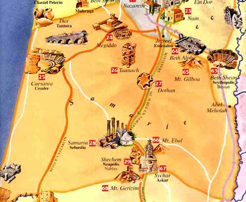
(1) Cette région de Palestine était limitée au nord par la Galilée, à l'est par le
Jourdain, au sud par la Judée. C’est une terre fertile où poussent l’olivier, l’amandier, le figuier et l’abricotier mais assez accidentée avec deux montagnes qui se font face près de Sichem: l’Ebal (938 mètres) et le Garizim (880 mètres)
Dirigée au temps de Jésus par Hérode le Grand puis par son fils Archélaos, elle fut soumise à l’autorité romaine à partir de 6 après Jésus-Christ. Villes principales: Samarie-Sebasté et Sichem-Sichar.
(2) ville à 65 kilomètres au nord de Jérusalem, capitale de la région du même nom qui avait remplacé l’ancienne Sichem. Détruite par le roi juif Jean Hyrcan en
Jésus-Christ par Hérode le Grand qui la rebaptisa Sebaste en l’honneur de l’empereur Auguste (Sebastè est l’équivalent grec du latin Augustus) pour y installer les nombreux vétérans étrangers de son armée, probablement en 25 avant Jésus-Christ. La ville ancienne fut agrandie ainsi à près de soixante
Présentation géographique du Nouveau Testament EBIOR-2010 p. 46 / 91 hectares, pour y recevoir six mille colons et ses fortifications furent refaites.
Comme à Césarée Maritime, Hérode y construisit un temple d'Auguste et de Rome. Les soldats originaires de Sebaste constituaient un élement important des troupes romaines en Judée, ce qui pourrait expliquer certains comportements agressifs de soldats lors de la Passion de Jésus ( Mt, 27, 27-31; Mc 15,19-20).
Habitant de la Samarie. Ses habitants étaient méprisés par les juifs pour avoir édifié sur le mont Garizim un temple, rival de celui de Jérusalem (Lc 9 52; Jn 4 9; Jn 8 48). Cependant ils observaient la plupart des préceptes du judaïsme, croyaient en un Dieu unique et parmi les livres saints ne reconnaissaient que le Pentateuque (les cinq premiers livres de la Bible, dits livres de Moïse, ou encore la Torah, ou la Loi). Les samaritains refusaient l’hospitalité aux pèlerins galiléens se rendant à Jérusalem (Lc 9,53), les obligeant ainsi à allonger le trajet en passant par la rive orientale du Jourdain.
Ou Sichar. Ville construite dans le passage entre le mont Ebal au nord et le mont Garizim au sud, où se produisit la rupture entre le royaume d’Israël et de Juda. Capitale de la Samarie depuis la fin du IVème siècle avant Jésus-Christ, elle fut détruite par le roi juif Jean Hyrcan en 128 avant Jésus-Christ et reconstruite dans un autre site proche par l’empereur Vespasien en 72 après Jésus-Christ sous le nom de Flavia Neapolis, l'actuelle Naplouse. C’est un peu au sud de cette ville, sur la route qui mène à Jérusalem, que se situe le célèbre puits de Jacob, de vingt à trente mètres de profondeur, au bord duquel Jésus discuta avec la femme samaritaine (Jn 4,5). Il n’a pas beaucoup changé au fil des siècles bien qu'il soit actuellement englobé dans une église grecque orthodoxe, inachevée depuis sa construction en 1914. Les anciennes traditions juives et chrétiennes confirment l'identification puisqu'il y avait déjà une église autour du puit dès le IVème siècle, église qui fut détruite à plusieurs reprises.
Port sur la Méditerranée, au nord de la Palestine, ancienne ville phénicienne, comprise dans la province romaine de Syrie. Aujourd'hui: Saïda, au Liban (Mt 11,22; Mc 3,8; Mc 7,31).
Présentation géographique du Nouveau Testament EBIOR-2010 p. 47 / 91
Le monastère de Sainte-Catherine, au pied du mont Sinaï, au sud de la péninsule du même nom (62 000 km2), fut érigée, selon la tradition chrétienne, sur le site du Buisson Ardent. Lors de la fuite en Égypte, l’enfant Jésus évita le Sinaï en passant par Gaza et par la bande côtière.
Cette région du Proche-Orient, conquise par le général romain Pompée en 64 avant Jésus-Christ, avait pour limite au nord, la chaîne montagneuse du Taurus, à l’est, le cours de l’Euphrate, à l’ouest la mer Méditerranée et au sud les massifs du Liban et de l’Anti-Liban. Devenue une des
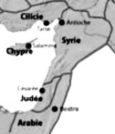
provinces les plus riches et les plus importantes de l’empire
romain, elle était dirigée par un légat impérial ancien consul
qui commandait trois légions. Son autorité s’étendait également sur les cités philistines et sur celles de la Décapole, qui jouissaient d'une large autonomie. La population de la province, fort importante et fort diversifiée, comprenait des paysans syriens dans la campagne, des descendants de colons grecs dans les cités, des soldats romains, des communautés juives et des nomades arabes. Elle parlait essentiellement grec ou araméen. Les principales villes de la Syrie étaient au nord la capitale, Antioche, la troisième ville de l’empire après Rome et Alexandrie, Damas à l’intérieur du pays, Tyr et Sidon sur le littoral phénicien au sud.
Un habitant de la partie phénicienne de la province romaine de Syrie. La région de Syro-Phénicie dont les principales villes étaient Tyr et Sidon se trouvait en bord de Méditerranée, et jouxtait le nord-ouest de la Galilée et de la Samarie. La Palestine était ainsi entourée de nations païennes, qui adoraient des idoles.
Corazin, Israël, 1992, p.133
Présentation géographique du Nouveau Testament EBIOR-2010 p. 48 / 91
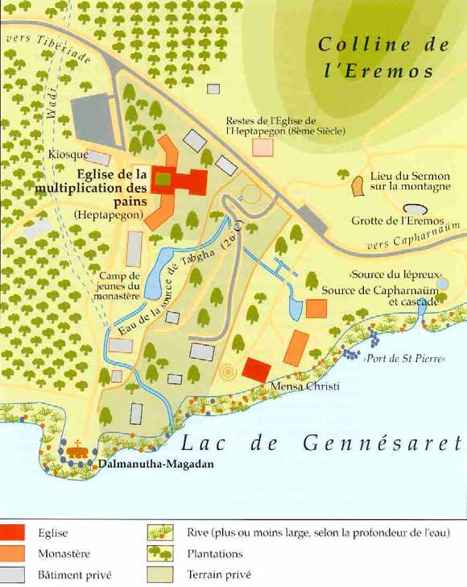
Sur la rive occidentale du lac de Galilée, au nord et à trois kilomètres de
Capharnaüm, s’étend la fertile vallée de Tabgha. Ce nom actuel est la corruption du grec « Heptapegon », « les sept sources », le nom ancien était sans doute Magadan (« Ma-Gad », « les Eaux de Fortune) (Mt 15,39). Á l’époque romaine, la Via Maris passait dans cette région qui, venant de la côte et de Tibériade, menait jusqu’à Damas via Capharnaüm et les sources du Jourdain. Quelques restes subsistent encore sur place. C’est dans ce lieu, riche en eaux courantes, que la tradition a fixé la première multiplication des cinq pains et des deux poissons. (Mt 14,13-21; Mc 6,30-44). Ses douze paniers pleins de morceaux, évoque, selon
Présentation géographique du Nouveau Testament EBIOR-2010 p. 49 / 91 une tradition ancienne, les douze tribus d’Israël, les premières appelées au festin messianique.
En 1932, furent retrouvés les restes de deux églises byzantines,
•la première de la seconde moitié du IVème siècle
•et la deuxième du Vème siècle, d'une plus grande surface. Ses
mosaïques, représentant la vie animale et végétale du lac, d’une
superficie de 520 m2 et comportant pas moins de sept millions de petits
cubes de 8 x 8 mm figurent parmi les plus belles de la Terre Sainte.
Parmi elles, la célèbre mosaïque de la Corbeille ne représente que
quatre pains, le cinquième étant le Christ lui-même sous la forme du
pain eucharistique sur l’autel.
C’est devant cette mosaïque et sous l’autel de l’actuelle église des bénédictins allemands consacrée en 1982, que les visiteurs peuvent voir encore aujourd’hui le bloc de pierre sur lequel le Seigneur aurait posé les pains et les poissons.
• Cette troisième église moderne a été construite sur le même
emplacement et sur le même plan que la deuxième. De l’esplanade qui s’étend devant l’atrium de l’église de la Multiplication, descend vers le lac un chemin qui conduit à un emplacement appelé « Dalmanuta » (« le séjour du Seigneur ») où le Christ aurait discuté avec des pharisiens (Mc 8,10). Tous les jours l’eucharistie y est célébrée en plein air, vis-à-vis du lac de Galilée.
C’est également entre Tabgha et Capharnaüm, que se situe sans doute le lieu désert (« eremos ») où, d’après Mc 6,46; Mt 15,39 et 28,16, Jésus avait l’habitude de se retirer, dans une grotte située à mi-pente d’une colline. Un replat, au-dessus de la grotte et toujours visible, est l’endroit même où la
tradition la plus ancienne situe le Sermon sur la montagne (Mt 5,1-12).
Au sommet de cette colline, à deux cent mètres au-dessus du lac, a été
construite en 1937, l’église franciscaine des Béatitudes, en forme d’octogone, qui offre une vue magnifique et où les huit célèbres béatitudes sont inscrites sur chaque mur.
Présentation géographique du Nouveau Testament EBIOR-2010 p. 50 / 91
C’est toujours à Tabgha, à trois cent mètres à l’est de l’église de la
Multiplication, que se situe la petite chapelle en basalte de la Primauté de
Pierre, édifiée en 1934, au bord du lac et au-dessus d’un rocher connu au
moyen âge sous le nom de « Mensa Christi: la table du Christ » La Tradition a toujours placé ici la rencontre du Seigneur ressuscité avec les siens, autour d’un feu allumé près du rivage (Jn 21).
Du haut de ses 588 mètres, cette montagne isolée de Galilée, d’une forme conique régulière et harmonieuse, domine la riche plaine qui s’étale à ses pieds. C’est là que la tradition chrétienne situe la scène de la Transfiguration (Mt 17,1-9 ; Mc 9,2-8; Lc 9,28-36) où le Christ apparut dans sa Lumière et dans sa Gloire, avec Moïse et Élie, sous les yeux de ses disciples Pierre, Jacques et Jean. Le sommet du Thabor se présente comme un plateau long de plus d’un kilomètre pour une largeur moyenne de quatre cent mètres: deux églises y ont été construites, une orthodoxe et une catholique. Remarquons qu’une autre tradition transmise par EUSEBE de Césarée situe la Transfiguration au massif du mont Hermon, en Syrie.
Port maritime de la province de Cilicie dans le sud de l’Asie mineure, à la population mélangée, grecque et juive. Réputée pour le tissage de la toile, cette ville fut le lieu de naissance de saint Paul, à la fois juif pharisien du nom de Saül, citoyen grec de Tarse et citoyen romain. Cf. Ac 9,11; 11,25; 21,39 où Paul se présente lui-même à un tribun romain comme juif, citoyen de Tarse et 25,11 où il revendique d’en appeler au tribunal de l’empereur, privilège réservé aux citoyens romains.
Présentation géographique du Nouveau Testament EBIOR-2010 p. 51 / 91
Aujourd'hui Salonique, une des villes les plus importantes de la Grèce contemporaine. Capitale d'un des quatre districts de la Macédoine romaine, la ville était dirigée par des polémarques (Ac 17,6). En venant de Philippes, Praul y rencontra une communauté juive importante qui y possédait une synagogue et se révéla hostile à son égard (Ac 17,2-3). Accompagné de Silas et de Timothée, il y fonda cependant une église, constituée en grande partie par des païens convertis. A la suite d'une émeute provoquée par les juifs, Paul dut s'enfuir de nuit pour Bérée.
Autour d’une source sulfureuse jaillissant près du lac de Galilée, le tétrarque
Hérode Antipas fit construire en 18 après Jesus-Christ une ville qu’il baptisa du nom de l’empereur régnant Tibère pour en faire sa capitale en remplacement de Sepphoris, à sept kilomètres au nord de Nazareth. Sa population était en majorité païenne car Tibériade était bâtie sur un ancien cimetière et aucune présence de Jésus n’y est mentionnée. L'organisation de la ville était entièrement hellénistique, avec une assemblée ("boulè") de sis cent membres, un président ("archonte") et dix délégués. Au moment de la grande révolte de 66 après Jésus-Christ, la population qui était peut-être devenue majoritaire, se divisa en deux groupes: l'un favorable aux Romains et l'autre, qui l'emporta, favaorable à la révolte. Après les deux révoltes juives manquées de 66-72 et 132-135, c’est autour de cette ville que se regroupa la communauté juive, l’accès à Jérusalem leur étant interdit. Car la ville se rendit au général romain Vespasien et sa population fut ainsi épargnée.
Région (" la rude ") appartenant au tétrarque Philippe citée par Lc 3,1 et constituées de deux districts volcaniques peu habités situés au sud-est de Damas.
En grec Alexandria Troas, en mémoire d’Alexandre le Grand. Ancienne cité du nord-est de la province romaine d’Asie, située sur la mer Égée, non loin de l’emplacement de la Troie homérique. À l’époque romaine, ce port prospère permettait des liaisons rapides entre l’Asie d’un côté, la Macédoine et la Grèce de l’autre. Saint Paul s’y rendit depuis Antioche, lors de son second voyage (Ac
Présentation géographique du Nouveau Testament EBIOR-2010 p. 52 / 91
16,8). Il y eut la vision d’un homme qui l’appelait au secours en Macédoine (Ac 16,9). Paul y retourna pour la traversée inverse (Ac 20,6) et y sauva la vie d’un jeune garçon nommé Eutychès (Ac 20,7-12). Il y fonda également une communauté (2 Co 2,12 et 2 Tm 4,13: la mention du manteau et des livres de Paul, laissés à Troas chez un certain Carpus).
Double port sur la Méditerranée, au nord de la Palestine, comprise dans la province romaine de Syrie. Aujourd'hui: Sûr, au Liban (Mt11,22; Mc 3,8; Mc 7,24). Cette ancienne ville phénicienne, à 32 kilomètres au sud de Sidon, était bâtie sur une île située dans l’antiquité à 1200 mètres de la rive. Alexandre le Grand fit construire une jetée pour la relier à la terre ferme et pour s’en emparer.
Syrie Antioche - Séleucie Chypre Salamine - Paphos Pamphylie Pergé - Attalia Pisidie Antioche Lycaonie Iconium - Lystres - Derbé Syrie Antioche
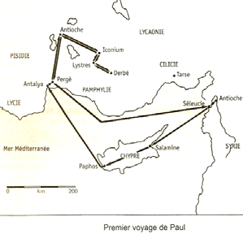
Syrie Antioche Cilicie Tarse Lycaonie Derbé - Lystres - Iconium Pisidie Antioche Asie Troas Macédoine Neapolis - Philippes - Thessalonique - Bérée Achaïe Corinthe- Athènes Asie Ephèse Palestine Césarée - Jérusalem Syrie Antioche
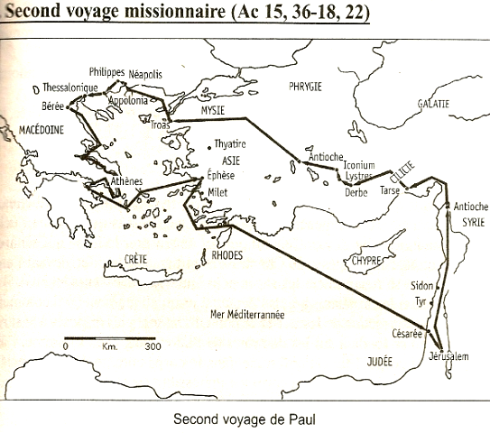
Présentation géographique du Nouveau Testament EBIOR-2010 p. 54 / 91
Syrie Antioche Cilicie Tarse Galatie Asie Ephèse - Troas Macédoine Neapolis - Philippes - Thessalonique - Bérée Achaïe Athènes - Corinthe Macédoine Philippes Asie Troas - Milet Lycie Patara Palestine Tyr - Césarée - Jérusalem
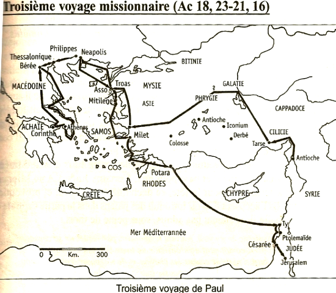
Salvator, 2009
Présentation géographique du Nouveau Testament EBIOR-2010 p. 55 / 91 Présentation géographique du Nouveau Testament EBIOR-2010 p. 56 / 91
Construite par les Croisés après 1100, en pur style roman, l’église de sainte
Anne est sans doute la plus belle église de ce style de tout le Proche Orient. Elle est construite au-dessus d’une crypte où, selon la Tradition, aurait vécu Joachim et Anne, les parents de Marie. Celle-ci y serait également née. Depuis 1856, cette église appartient à la république française et est confiée aux Pères Blancs. A proximité se situent les ruines de l’ancienne piscine de Bethesda.
Cette forteresse située au nord-ouest du Temple fut construite par les rois hasmonéens au IIème siècle avant Jésus-Christ et restaurée par Hérode le Grand qui la rebaptisa du nom de son protecteur, le célèbre triumvir romain Marc Antoine. Une cohorte dirigée par un tribun y résidait en permanence (Ac 21,31). C’est à la fois une immense plate-forme massive, encadrée de quatre tours, dominant le temple en contrebas et un véritable palais aux nombreuses pièces bien équipées. Ce vaste ensemble, totalement détruit depuis le 24 juillet 70, regroupe aujourd’hui une école musulmane, un monastère franciscain et le couvent des Sœurs de Sion. Dans la cour de cette école, considérée traditionnellement comme le lieu du procès du Christ commence la Via Dolorosa, le Chemin de Croix. Dans le couvent, les fouilles de 1931 à 1937 ont mis à jour un magnifique dallage avec, gravé dans la pierre, une représentation du jeu du roi. Ce jeu d’osselets pouvait servir de distraction aux militaires de la garnison romaine. Ce dallage a été appelé le Lithostrotos, par référence au texte de Jn 19,13 bien qu’il n’est plus du tout prouvé qu’il s’agisse bien du lieu du jugement du Christ. En effet il appartient plutôt au forum construit par HADRIEN, étant construit au-dessus d’une citerne comblée et voûtée par TITUS lors du siège de 70 après Jésus-Christ. On y voit également une partie d’une porte triple romaine qui se prolonge dans la rue adjacente par un arc dit de l’Ecce Homo, en souvenir des paroles de Ponce Pilate en Jn 19,5. Toutefois celui-ci fut sans doute construit par le roi AGRIPPA I (41-44) ou par l’empereur HADRIEN, en 135 de notre ère lorsqu’il rebâtit Jérusalem sous le nom d’Aelia Capitolina.
Présentation géographique du Nouveau Testament EBIOR-2010 p. 57 / 91
Ou Bezatha, en araméen "la fente". Nom d’une piscine située au nord-est de l’enceinte du Temple près de l'église sainte Anne et de la Porte des Brebis d’où son nom également de piscine probatique (" probata " en grec signifie " brebis ").
C'est là que Jésus guérit un homme infirme depuis trente-huit ans (Jn 5,8).
Cet ensemble construit au IIème siècle avant Jésus-Christ est constitué de deux bassins séparés par une digue centrale formait un quadrilatère d’environ 100 mètres de long sur une largeur de 60 à 90 mètres ce qui justifie l’expression " aux cinq portiques " (et non un pentagone) utilisée en Jn 5,2. C’était en fait un sanctuaire dédié à Asclépios ou Esculape, le dieu gréco-romain de la médecine où de nombreux ex-voto païens ont été découverts. Une foule de malades et d'handicapés s'y pressaient dans l'espoir d'une guérison miraculeuse. Au Vème siècle, la nef centrale d'une basilique byzantine fut construite sur la digue qui séparait les deux bassins avec son choeur, reposant par huit grandes arches audessus des anciens bains païens en partie comblés.
Le Cénacle (en latin cenaculum, " la chambre haute ") se situe au sud-ouest de la vieille ville, sur le mont Sion et à l’extérieur des remparts de Soliman, contrairement à l’époque du Christ. C’est dans cette chambre haute qu’une tradition situe le dernier repas de Jésus avec les siens, la Cène (Mt 26,17-25; Lc 22,14-27). Mais selon la plus ancienne tradition de Jérusalem, ce serait ici également que Marie, les Douze et d’autres disciples se rassemblèrent après la crucifixion, assistèrent aux apparitions du Christ (Jn 20,19-23) et à la descente de l’Esprit Saint, " comme des langues de feu " (Ac 2,1-4).Dès le premier siècle, les premiers chrétiens y bâtirent une petite église qui échappa aux destructions de
Byzantins l’agrandirent vers 390 pour en faire un des plus grands édifices de Palestine et lui donnèrent le nom de Sainte Sion, nom qui fut étendu ensuite à toute la colline où elle se situe. Cette église fut détruite par les Perses en 614, reconstruite par les croisés au XIIème siècle et à nouveau détruite en 1219. Par la suite, en 1333, les moines franciscains ne reconstruisirent que la seule salle actuelle, de forme rectangulaire, à plafond haut et voûté, soutenu par des
colonnes à chapiteaux gothiques.
Présentation géographique du Nouveau Testament EBIOR-2010 p. 58 / 91
Située a mi-pente du mont des Oliviers, cette petite église franciscaine, construite en 1955 en forme de larme, commémore les pleurs de Jésus se lamentant sur le sort de Jérusalem (Lc 19,41-44: Dominus flevit, en latin " le Seigneur a pleuré "). Elle est bâtie sur une autre église croisée et sur les vestiges d’un monastère remontant au Vème siècle. La verrière derrière l’autel procure une magnifique vue sur la ville sainte.
La basilique de la Dormition de la Vierge Marie a été construite en 1910 par les chrétiens allemands au sommet de la colline de l’ouest, sur les ruines de l’ancienne basilique byzantine de la Sainte Sion. Selon la tradition de Jérusalem, c’est là que Marie vécut ses derniers jours et s’endormit pour l’éternité, le Christ emportant son âme vers le ciel et son corps restant épargné par la corruption. Selon un texte apocryphe du Vème siècle, le Transitus Mariae (" le passage de Marie " en latin), les apôtres déposèrent son corps dans un sépulcre neuf, dans la vallée de Josaphat identifiée au Cédron au pied du mont des Oliviers. Sur les ruines d’une première église byzantine, les Croisés y construisirent un sanctuaire roman, au-dessus d’une crypte qui contient une chambre funéraire avec une banquette de marbre.
L’accès se fait actuellement par un escalier d’une cinquantaine de marches. Remarquons toutefois qu’une autre tradition situe l’Assomption de Marie à Éphèse, en Asie mineure, où elle aurait vécu auprès de saint Jean.
Gallicante (saint Pierre en) Ou saint Pierre au chant du coq, selon le latin " in gallicantu ". Cette église, qui domine la vallée du Cédron, est dédiée à Pierre, le prince des apôtres, qui renia par trois fois Jésus (Mt 26,31-34 pour l’épisode du chant du coq). Construite au Vème siècle au-dessus d’une fosse profonde vénérée par les chrétiens, elle fut détruite une première fois en 614 par les Perses et à nouveau en 1009 en même temps que le Saint Sépulcre. Cette fosse, profonde de trois mètres, a pu servir de bain rituel juif avant d’être transformé en citerne et/ou en prison.
Présentation géographique du Nouveau Testament EBIOR-2010 p. 59 / 91
De plus, de nombreuses autres excavations, grottes, caves ou citernes situées à proximité restent bien mystérieuses.
L’église actuelle fut bâtie en 1931 au dessus des ruines byzantines, sur l’emplacement où la tradition situe la résidence du grand prêtre Caïphe. La présence de nombreuses croix byzantines, une collection de poids et mesures officiels ainsi que des témoignages littéraires comme celui du Pèlerin anonyme de Bordeaux en 333 peuvent être interprétés en ce sens.
Ce serait donc là que Jésus fut conduit après sa capture, qu’il comparut
devant le sanhédrin et qu’il fut condamné. De là il fut ensuite livré au gouverneur romain Ponce Pilate. Un chemin en escalier fort pentu descend des beaux quartiers de la ville haute du mont Sion vers les quartiers populaires de la vallée du Cédron: il est encore bien visible de nos jours et semble contemporain du Christ. Peut-être a-t-Il utilisé ces marches lors de la semaine sainte lorsqu’ Il a quitté la chambre haute du Cénacle, située à dix minutes de marches, en en sens inverse, après son arrestation à Gethsémani. Remarquons toutefois qu’une autre tradition, moins vraisemblable, situe le lieu de l’arrestation, trois cent mètres plus haut, à l’église arménienne de Caïphe, près de la porte de Sion et du Cénacle.
Cette vallée au sud de Jérusalem, dont le nom hébreu Gê Ben Himmôm signifie "vallée des fils de Hinnom" débouche dans la vallée du Cédron au pied du village de Siloé. Avant l'Exil en Mésopotamie, au temps du roi Achab (IXème siècle), des Juifs idolâtres y ont sacrifié aux dieux Moloch et Baal en brûlant vifs leurs enfants. Après l'Exil, les Juifs ont voulu montrer l'horreur qu'ils avaient de ce lieu en y entretenant un feu, peut-être permanent, qui brûlait ce que la ville rejetait: ordures, mais aussi cadavres d'animaux et de criminels. Ainsi, la Géhenne fut associée, d'une part à la souffrance de ceux qui y avaient été sacrifiés, mais aussi à l'image de destruction continuelle de l'impureté.
Présentation géographique du Nouveau Testament EBIOR-2010 p. 60 / 91
(en hébreu, "pressoir aux olives") Lieu-dit situé au pied du mont des Oliviers, à quelques centaines de mètres du Temple, sur la rive orientale du torrent du Cédron où Jésus aurait vécu son agonie (Mt 26,36 – Mc 14,32 – Jn 18,1). C’est un verger planté d’oliviers, avec un pressoir à huile. Une tradition non vérifiée du IVème siècle le situe à cinquante mètres à l’est du pont sur le Cédron, dans un petit jardin fermé. Dans cet endroit paisible poussent toujours huit oliviers très anciens, dont certains sont sans doute âgés de plusieurs siècles. Il est fort probable que le Christ sortit du Cénacle, descendit par l’escalier de la colline de Sion, encore utilisable aujourd’hui et traversa le Cédron pour se rendre à Gethsémani. Une grotte, dite grotte de la Trahison, est connue traditionnellement comme le lieu de l’arrestation du Christ ou d’un repas accompagné d’un lavement des pieds.
Une première basilique s’éleva en ce lieu dès 379 mais fut détruite par les
Perses en 615. Elle fut ensuite reconstruite par les Croisés au XIIème siècle et se dégrada au cours du temps. La magnifique basilique actuelle ou Église des Nations fut bâtie entre 1919 et 1924 grâce au soutien de seize pays différents, d’où son nom. L’intérieur, volontairement assombri, recouvre ce qui reste du rocher de l’Agonie: l’atmosphère qui y règne pousse à la prière et au recueillement. La célèbre mosaïque du fronton extérieur représente le Christ en prière offrant à son Père ses souffrances et celles de l’humanité.
Présentation géographique du Nouveau Testament EBIOR-2010 p. 61 / 91
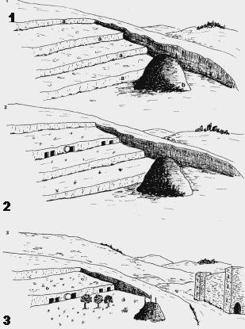
Le toponyme araméen Golgoltha qui signifie "crâne" a été transcrit " Golgotha " en grec (Mt 27,33; Mc 15,22; Lc 23,33) et traduit en latin par " calvaria " qui a donné notre mot " calvaire ". Sans doute à cause de la disposition du lieu: un petit tertre rocheux de 4 à 5 mètres (ou 10?) de haut, situé hors des remparts de Jérusalem, du côté nord-ouest, qui servait de lieu d’exécution des condamnés: neuf tombes ont été découvertes lors de fouilles. Jésus fut crucifié dans ce lieu sauvage et impressionnant malgré sa petite taille. Il était situé dans une carrière abandonnée seulement à l'époque romaine et n'avait subsisté que parce qu'il était composé d'une roche calcaire friable et donc inutilisable. D'après l'Évangile selon Jean (19,41), on y trouvait un jardin et un tombeau où Jésus fut placé. Depuis l’empereur Constantin au IVème siècle, le Golgotha est inclus avec le tombeau du Christ (Anastasis) dans la basilique du Saint-Sépulcre.
1.À l'époque royale, la c olline fut exploitée comme carrière qui laissa des marches de 2 mètres de hauteur environ
2. pour creuser des tombes
Après l'exil, la carrière abandonnée servit
3.Au temps d'Hérode le fond de la carrière devient un jardin et le
bloc
isolé qui s'élève à environ 5 mètres au-dessus du jardin sert de gibet.
Au sommet, accessible par un escalier intérieur, se situent deux chapelles: l’une , catholique, à l’endroit où le Christ fut dépouillé de ses vêtements et cloué à la croix, l’autre, grecque orthodoxe, à l’endroit même de la crucifixion. Toutes les
Présentation géographique du Nouveau Testament EBIOR-2010 p. 62 / 91 deux reposent en partie sur le rocher d’origine, encore visible à l’étage inférieur dans la chapelle d’Adam.
C’est
dans une étendue rocailleuse située à l’extrémité orientale du versant
sud de la vallée de la Géhenne que, selon une tradition remontant au IVème siècle, se situe " le champ du potier ", transformé en " champ du sang " ou Haceldama (Ac 1,19) après la remise de l’argent de la trahison de Judas (Mt 27,8). Une grotte, où les apôtres se seraient enfuis après avoir abandonné Jésus lors de son arrestation, est connue sous le nom de "refuge des apôtres".
Capitale de la Judée, située à 50 kilomètres de la mer Méditerranée et à 22 ètres de la mer Morte. Elle se situe sur la ligne de partage des eaux et kilom présente un relief fort prononcé car la ville s’élève sur deux promontoires rocheux, séparés par la dépression du Tyropéon, aujourd'hui pratiquement comblée:
1. sur un versant verdoyant et arrosé, le promontoire occidental avec la ville
haute (jusque 780 m) contourné par la vallée de la Géhenne ou Hinnom
2. t
le promontoire oriental (ville basse) constitué par le mont Sion (660 m) e
le mont Moriah, où s’élève le Temple (entre 720 et 740 m)
A l'est, en-dehors de la ville antique, une autre vallée, celle du Cédron (entre 610 et 690 mètres d’altitude) au pied d'un versant presque désertique culminant au Mont des Oliviers (815 m). Vers le sud, ce ravin rejoint la vallée de la Géhenne.
Présentation géographique du Nouveau Testament EBIOR-2010 p. 63 / 91
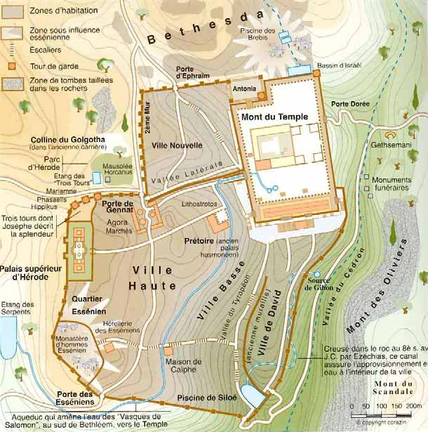
Source: Guide Gallimard de Terre Sainte
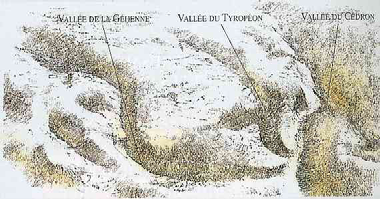
Présentation géographique du Nouveau Testament EBIOR-2010 p. 64 / 91
Source: Jacqueline GENOT-BISMUTH, Jérusalem ressuscitée, FX de Guibert, 1992
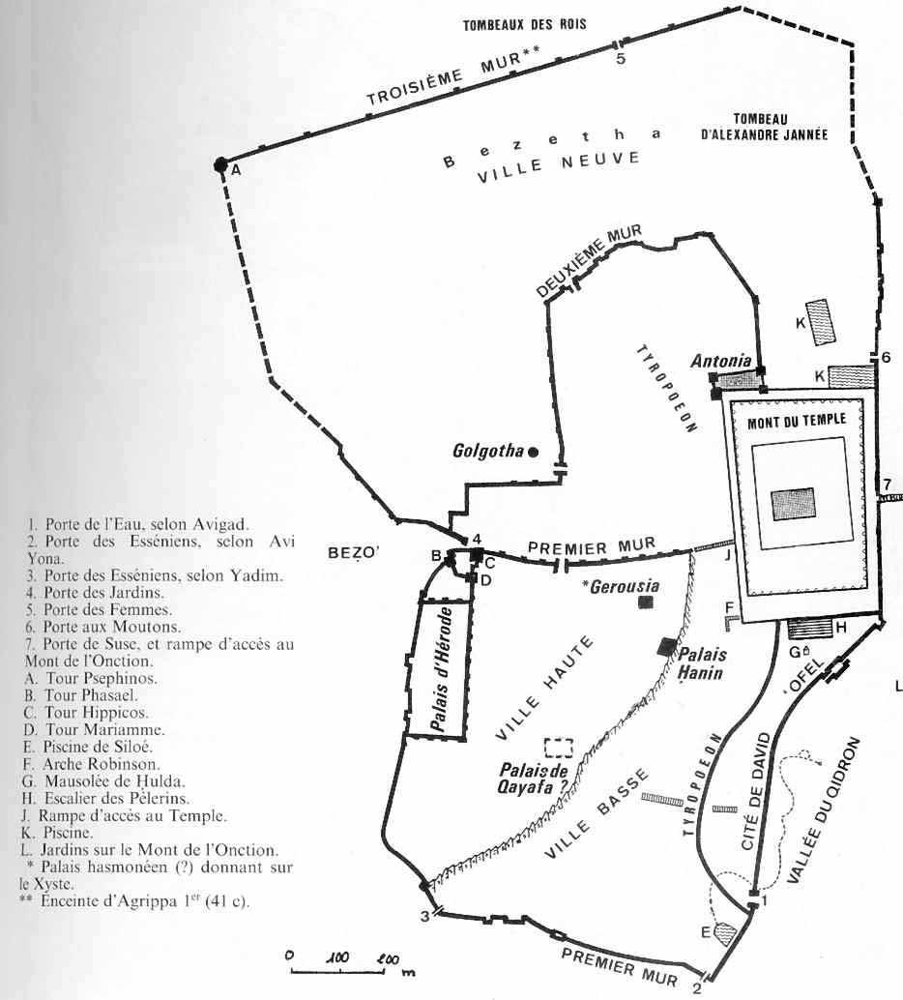
L’historien juif Flavius JOSÈPHE (1er siècle après Jésus-Christ), lors du siège
en 70 de la ville de Jérusalem par les Romains nous rapporte que trois murs entouraient la ville à cette époque:
•le Premier Mur, que de nombreuses fouilles ont mis à jour en
plusieurs endroits, est bien connu sauf pour sa jonction avec
Présentation géographique du Nouveau Testament EBIOR-2010 p. 65 / 91
l’enceinte du Mont du Temple à l’est. Il date sans doute du roi
EZÉCHIAS et fut restauré par les Hasmonéens.
•le Deuxième Mur, qui date probablement du temps d’HÉRODE le
Grand, n’a pas encore livré de vestiges évidents. Il devait relier le
Palais supérieur d’HÉRODE à l’ouest avec la forteresse Antonia, à
l'est. C’est à l’intérieur de cette espace que se trouvaient des
marchés mais à l’extérieur que se situait le Golgotha.
•le Troisième Mur, commencé par HÉRODE AGRIPPA I (41-44),
interrompu par l’empereur CLAUDE et achevé en 66, au début de la
révolte contre Rome, est controversé quant à son tracé. Certains
chercheurs le confondent avec l’actuelle enceinte turque alors que
la majorité d’entre eux estime qu’il se trouvait près de trois cent
mètres plus au nord.
Hérode le Grand a fait construire l’Antonia ainsi qu’un palais forteresse défendu par trois grandes tours. A l’époque du Christ, les murailles de la ville s’étendaient au sud jusqu’au confluent du Cédron et de la Géhenne alors qu’au nord, le Golgotha se trouvait en-dehors des remparts. Cette situation persistera jusqu’à la construction du rempart septentrional par Mt 2,1 et Lc 13,14). À l'époque de Jésus, la ville était dotée d'un grand Temple (Mc 11,11 et 11,15), unique lieu de culte, vers lequel les Juifs montaient (Mc 10,32) notamment à l'occasion des trois grandes fêtes de pèlerinage: Pâque, Pentecôte et Tentes (Dt 16,6). A ces différentes occasions, aux trente ou quarante mille habitants de la ville venaient s’ajouter de cent à deux cent mille pèlerins; cette foule pouvait constituer une menace pour les autorités juives et romaines. Aussi le gouverneur venait s’installer avec des troupes soit dans l’ancien palais d’Hérode le Grand, soit dans la forteresse Antonia.
C’est dans cette ville que Jésus vécut ses derniers moments, sa passion, sa
mort et sa résurrection.
Principaux lieux mentionnés dans le Nouveau Testament: l’Antonia, la piscine
Bethesda, Gethsémani, le Golgotha, la Géhenne, Haceldama, le mont des Oliviers,
le Temple.
Localités autour de Jérusalem:
•à l'ouest: Emmaüs et Ein Karem
Présentation géographique du Nouveau Testament EBIOR-2010 p. 66 / 91
au nord: Sichem et la Samarie
au nord-est: Jéricho et le mont de la Tentation ( ou de la Quarantaine)
•immédiatement à l'est: le mont des Oliviers, Bethphagée et Béthanie avec le tombeau de Lazare •au sud: Bethléem et Hébron
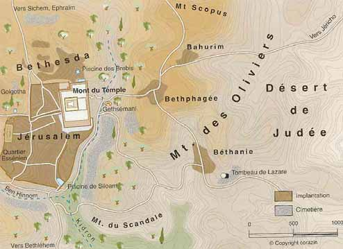
Située à l’est de Jérusalem dont elle est séparée par la vallée du Cédron large d’environ huit cent mètres, cette colline (Mt 21,1; Mc 11,1; Lc 19,29), à mille cinq cent mètres du Temple, se constitue de trois sommets: le Scopus au nord, le Mauvais Conseil au sud et le mont des Oliviers proprement dit au centre (818 mètres d’altitude). Sur le sommet de ce dernier se trouve la chapelle de l’Ascension (Ac 1,9-12) construite au IVème siècle, un petit octogone à ciel ouvert, où le Christ aurait laissé l'empreinte de ses pieds avant de quitter les siens. Depuis 1198, l'édifice a été recouvert d'une coupole et transformé en mosquée. Un peu plus bas se dressent l'église Dominus Flevit et l’église du Pater, bâtie en 1868 sur le lieu où, selon la tradition, Jésus enseigna cette prière à ses disciples (Lc 11,1). Au pied du mont des Oliviers, se situent le jardin de Gethsémani et le tombeau de la Vierge Marie. À l’époque du Christ, le Mont des Oliviers portait le nom hébraïque de " Mont de l’Onction ". C’était le lieu
Présentation géographique du Nouveau Testament EBIOR-2010 p. 67 / 91 d’accomplissement solennel du rite rarissime de la vache rousse, indispensable à la fabrication des eaux lustrales nécessaires à la purification majeure du Temple.
La basilique Eleona ou église du Pater se dresse sur les pentes du mont des
Oliviers, au-dessus de la grotte du même nom (selon le grec elaion " [la grotte du jardin] des oliviers " ou elyona en araméen " la très haute ") où, selon une tradition tardive remontant aux Croisés, Jésus apprit à ses disciples la prière du Notre Père (Mt 6,9-13). C’est là aussi, selon EUSÈBE de Césarée vers 312, qu’il aurait prédit la destruction de Jérusalem et annoncé son retour à la fin des Temps (Mt 24,1-3; Lc 21,5-7). Une première église, construite par l’empereur romain CONSTANTIN au IVème siècle fut détruite par les Perses en 614 et reconstruite par les croisés au XIIème siècle. Aujourd’hui la basilique fait partie d’un monastère de carmélites fondé en 1875; sur les murs du cloître figure la célèbre prière du Notre Père en plus de soixante langues, dont une traduction récente en araméen, la langue parlée par le Christ.
Source: Terre Sainte, Guide Gallimard, d'après PIERROTTI
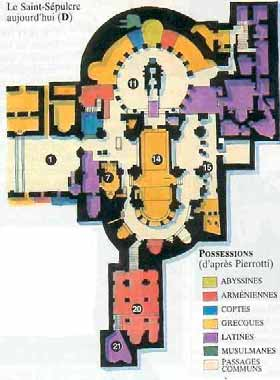
Présentation géographique du Nouveau Testament EBIOR-2010 p. 68 / 91
Source: Jacques THOMAS, Jérusalem traditionnelle et initiatique, Jean-Cyrille Godefroy,1995
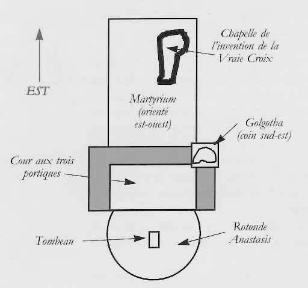
La basilique du Saint-Sépulcre recouvre et réunit ce qui reste de la colline du
Golgotha où le Christ fut crucifié et le tombeau où son corps fut déposé et qui fut retrouvé vide (Lc 23,33; Mt 27,33).
Selon Jn 19,20 la crucifixion eut lieu hors de la cité mais à proximité des murailles. Or ce site se situe presque au centre de la vieille ville actuelle de Jérusalem. Toutefois des restes d’anciens murs ont été retrouvés à proximité.
De plus la présence d’anciennes tombes juives à l’intérieur de l’enceinte de l’église confirme que ce lieu se trouvait à cette époque hors de la ville car la loi juive n’autorisait pas l’ensevelissement des morts à l’intérieur du périmètre de la ville sainte.
Vers 135, l’empereur romain HADRIEN fit recouvrir les lieux et y érigea un temple dédié à Jupiter. Loin de détruire le site le plus sacré de la chrétienté, cette action la préserva au contraire. Elle permit à l’empereur CONSTANTIN de bâtir en 324, sur l’emplacement du calvaire et du tombeau, la basilique du Saint Sépulcre, plus correctement appelée basilique de l’Anastasis, " la Résurrection " en grec. Les édifices construits par CONSTANTIN comportaient un atrium à trois portiques, un petit monument couvrant le Golgotha dans le coin sud-est et une église tournée
Présentation géographique du Nouveau Testament EBIOR-2010 p. 69 / 91 vers le tombeau, recouvert d’une coupole. Cette basilique fut détruite par les Perses en 614, reconstruite ensuite fort modestement et rasée par le calife HAKEM en 1009. Elle fut restaurée par les Croisés à partir de 1048, sous une forme qui s’est conservée jusqu’à notre époque, malgré les ajouts ultérieurs, en réunissant sous le même toit, le tombeau, l’atrium et le Golgotha mais sans la basilique primitive.
Selon le Statu-quo de 1852 et l’accord plus récent de 1959, l’église est mise à la disposition de plusieurs communautés chrétiennes qui y possèdent leurs propres chapelles: catholique, grecque orthodoxe, arménienne, syrienne, copte et éthiopienne. Les trois premières administrent également les zones communes de passage. Conformément aux traditions juives, la tombe comprenait deux parties: une chambre où se réunissait la famille lors des fêtes, correspondant à la chapelle de l’Ange actuelle et une seconde avec une plate-forme aménagée pour recevoir le corps.
de l'Anastasis 14 Choeur des Grecs 20 Chapelle sainte HÉLÈNE 21 Invention de la Vraie Croix
Cette disposition classique se retrouve dans la " Tombe du jardin ", au nordest de la porte de Damas. Cet endroit, bien conservé, donne une bonne idée de ce que devait être un tombeau à l’époque du Christ mais ne peut pas être le lieu de la mort de Jésus comme l’affirment certaines églises protestantes.
Présentation géographique du Nouveau Testament EBIOR-2010 p. 70 / 91
Source: Jacques THOMAS, Jérusalem traditionnelle et initiatique, Jean-Cyrille Godefroy,1995
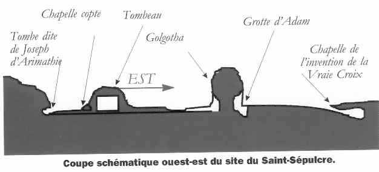
Détruite en 1009 elle aussi, la tombe ne contient plus qu’une dalle de marbre recouvrant le rocher d’origine, sous un édifice en marbre de style baroque, d’origine russe et datant de 1810. Celui-ci se situe lui-même sous la vaste rotonde de l’Anastasis. Dans une crypte excentrée par rapport au reste de la basilique appartenant à la communauté arménienne, l’impératrice HÉLÈNE, mère de CONSTANTIN, fit construire la chapelle de l’invention de la Croix, en souvenir de la redécouverte de la vraie Croix par ses soins.
Au VIIIème siècle avant Jésus-Christ, le roi EZÉCHIAS fit construire un tunnel de cinq cent trente mètres de long pour faciliter et protéger l’accès à la fontaine de Gihon, l’unique source d’eau de la ville de Jérusalem. Au débouché du tunnel il fit également construire une piscine, dite de Siloé dont le nom signifie " l’envoyé ".
Lors de la fête des tentes, les prêtres descendaient chaque jour à la piscine de Siloé pour y puiser de l’eau et la répandre ensuite sur l’autel dans le Temple. C’est à cet endroit et dans ce contexte liturgique que se situe le célèbre épisode de l’aveugle-né guéri par Jésus en Jn 9,1-40.
De même, c’est avec l’eau de cette piscine que l’on fabriquait l’eau lustrale,
en y mêlant de la cendre de la vache rousse. Une église, construite en ces lieux au Vème siècle, fut détruite par les Perses en
Présentation géographique du Nouveau Testament EBIOR-2010 p. 71 / 91
A l’époque de David, Sion est le nom qui désigne l’éperon rocheux de 4 ou 5 ha, appelé également Ophel, situé entre la vallée du Cédron et celle du Tyropéon, sur lequel le roi bâtira sa capitale, Jérusalem. Au 2ème siècle de notre ère, ce nom sera donné à la haute colline, à l’ouest du Tyropéon, où se situent également le Cénacle, la maison de Caïphe et la basilique
de la Dormition.
PRESENTATION
La tradition juive a identifié le mont qui domine la vallée du Tyropéon à
Jérusalem avec le mont Moriah où ABRAHAM avait décidé d’immoler son fils ISAAC (Gn 22,1-22). C’est à cet endroit également que se situait l’aire d’ARAUNA le Jébuséen que DAVID acquit à la fin de son règne (2S 24,1) pour y édifier un temple à YHWH. Mais c’est son fils SALOMON qui réalisera ce projet en construisant le Temple, magnifique édifice qui sera détruit par la roi de Babylone, NABUCHODONOSOR en 586 avant Jésus-Christ. Bien que relevé par ZOROBABEL, il ne retrouvera sa splendeur que grâce au roi HÉRODE le Grand, de 20 avant Jésus-Christ jusqu’à 70 après Jésus-Christ, date de sa destruction par les troupes romaines de TITUS. Celle-ci ne laissèrent que l’esplanade actuelle et le Mur Occidental, appelé improprement Mur des Lamentations.
Celui-ci comprend, outre trois rangées supérieures constituées de petites pierres de restauration, une trentaine d’assisses d’époque hérodienne, formées par d’énormes pierres à bossage plat soit une vingtaine de mètres actuellement visibles et une quinzaine sous le niveau du sol moderne.
C’est cette merveille, appelée habituellement le Second Temple, que connut
Jésus et ses disciples (Jn 7,37-39: l’Eau vive; Jn 2,13-21: les vendeurs). Après sa profanation par l’empereur HADRIEN en 135, le mont MORIAH resta à l’abandon jusqu’à l’arrivée des arabes au VIIème siècle qui y édifièrent deux importants monuments toujours existants: le Dôme du Rocher et la mosquée El- Aqsa.
Présentation géographique du Nouveau Testament EBIOR-2010 p. 72 / 91
Source: Bargil PIXNER, Avec Jésus à Jérusalem, Corazin, 1996
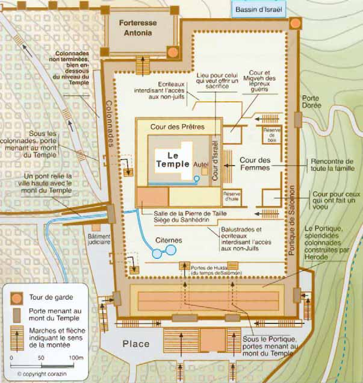
La pente générale du terrain étant orientée vers le sud, HÉRODE fit reposer l’esplanade dans cette direction sur de gigantesques voûtes murées appelées conventionnellement les écuries de Salomon; vers le nord, au contraire, il fit entamer la colline de Bethesda pour y construire la forteresse Antonia. L’ensemble, d’une superficie d’environ 14 hectares, était appelé le Mont du temple. Il formait et forme encore un trapèze d’environ 500 mètres sur 300, de structure concentrique, se présentant comme une succession de places et d’enceintes, permettant le passage progressif du profane au sacré , selon sept niveaux successifs:
Présentation géographique du Nouveau Testament EBIOR-2010 p. 73 / 91
Source: CD-ROM de la "Cité de l'Évangile " (Roubaix)
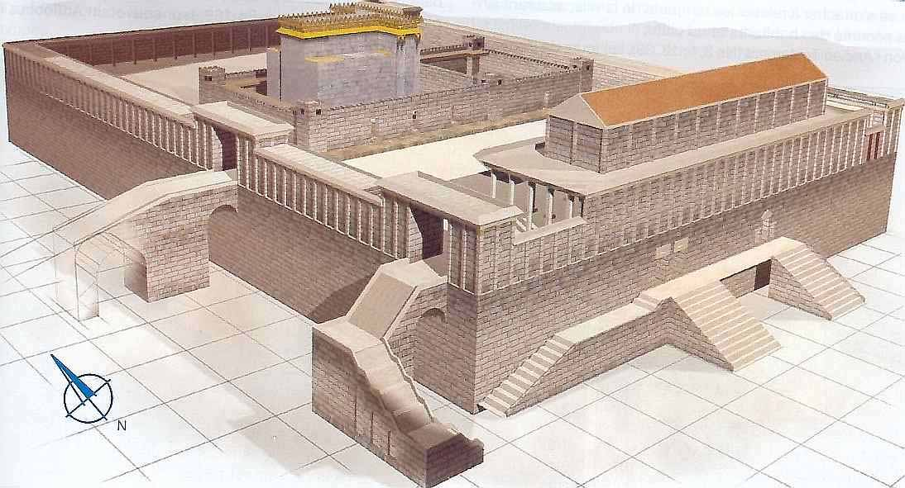
Un ensemble de portiques extérieurs, formant une première enceinte: le
parvis des Gentils.
Une seconde enceinte surélevée, réservée aux membres d’Israël et interdite
aux païens
A l’intérieur de cette dernière, le Temple proprement dit décomposé en
plusieurs espaces et salles
Voici quelques détails, de l’extérieur vers l’intérieur, du moins sacré vers le plus sacré, selon sept degrés successifs.
L’Esplanade actuelle ou Haram es Sharif forme un trapèze irrégulier, mesurant à l’est 462 mètres, à l’ouest 491 mètres, au sud 281 mètres et au nord
être très différentes, soit cinq fois la superficie de l’Acropole d’Athènes ce qui en fait le sanctuaire le plus étendu de l’antiquité classique. Elle était entourée de portiques (3), sorte de galeries soutenues par des colonnes, de dimensions différentes. Celui de l’est, le portique de Salomon, qui faisait face au mont des Oliviers, était plus bas pour ne pas gêner la vue alors que celui du sud, le Portique Royal ou Basilique (2), beaucoup plus haut, s’élevait sur deux étages. Au coin
Présentation géographique du Nouveau Testament EBIOR-2010 p. 74 / 91 nord-ouest se dressait la forteresse Antonia qui, du haut de sa butte, dominait les environs et au sud-est le Pinacle (Mt 4,5; Lc 4,9), l’endroit le plus élevé où l’on pouvait monter et d’où un prêtre annonçait le shabbat en sonnant de la trompe.
De la terrasse du Pinacle jusqu'au niveau du Cédron, la dénivellation
atteignait pratiquement 90 mètres, dont 45 mètres pour les murailles ellesmêmes.
L’ESPLANADE
Figure 34 Accès à l'esplanade du Temple Source: Michael AVI-YONAH, Guide illustré de la reconstitution de la Jérusalem antique, Palphot, Israël.
Les chiffres correspondant sont sur fond grisé dans le texte
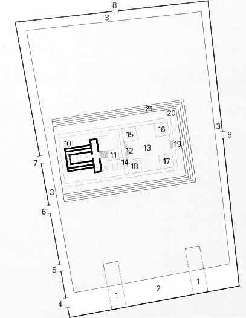
L’accès à cette Esplanade se faisait par de nombreuses portes:
Au nord, une liaison par un escalier grimpant jusqu’à l’Antonia et la Porte des Brebis ou de Tadi (8)
À l’est, vers le Mont des
Oliviers, la célèbre Porte Dorée (9)qui existait déjà à l’époque romaine. Elle fut murée par la suite pour empêcher le retour du Messie qui devait passer par ce chemin.
Au sud-est, une porte surélevée permettant un accès au Portique Royal Au sud, la Porte Triple (à droite, pour l’entrée) et la Porte Double (à gauche, pour la sortie), conduisant directement au parvis des Gentils en passant pardessous le Portique Royal. Elles étaient en relation avec un dispositif de rampes, d’escaliers monumentaux et de bains de purification récemment mis à jour et constituaient l’accès principal au Temple; elles portaient
Présentation géographique du Nouveau Testament EBIOR-2010 p. 75 / 91 l’appellation de Portes de Hulda (1), du nom du mausolée de la prophétesse de l’époque du roi JOSIAS qui se trouvait à proximité.
•A l’ouest, quatre portes s’ouvraient le long du Mur Occidental:
oAu coin sud-ouest, un escalier en forme de L reposant sur des arches
dont la plus haute s’élevait à 25 mètres au-dessus du sol, reliait la rue
du Tyropéon au Portique Royal par la porte Coponius. Les restes
portent le nom d’Arche de ROBINSON (4).
oUne seconde porte s’ouvrait au niveau de cette même rue, d’une
hauteur de 11 mètres pour une largeur de 5 mètres. Elle donnait
accès à l’Esplanade par un passage souterrain d’une vingtaine de
mètres, prolongé vers le sud par une rampe en pente et à angle droit,
de 16 mètres de long. C’est la porte de BARCLAY (5).
oVers le milieu, un pont reliant la ville haute au mont du Temple en
passant par-dessus la vallée du Tyropéon: les voûtes existantes
portent le nom d’Arches de WILSON. (6) Cette affirmation est
toutefois contestée par l’archéologue BEN DOV qui y voit un autre
escalier.
oUne quatrième porte, située au nord des trois autres, donnait peut-
être directement accès à l’enceinte intérieure du Temple. Une arche,
ajoutée par les Croisés par dessus la porte, a été appelée porte de
WARREN. (7)
DESCRIPTION DES PARVIS
Entre l’espace profane ("hol" en hébreu) accessible aux païens, appelé Parvis des Gentils et l’espace sacré ("qodes" en hébreu) s’étendait un espace intermédiaire, le Hel(20), constitué par une plate-forme surélevée de 6 coudées (3,7 mètres). C’était le septième niveau de sacralité, le moins important. Le Hel conduisait aux neuf portes de l’enceinte sacrée intérieure. La plus importante, située dans l’axe du Temple, portait le nom de Belle Porte ou Porte orientale. C’est là qu’eut lieu la guérison du paralytique décrite en Ac 3,6-8; les autres étant des portes latérales sans doute utilisées par les prêtres dans l’exercice de leurs fonctions. On accédait au Hel par des marches et devant celles-ci le septième niveau de sacralité était délimité par le Soreg (21) (mot hébreu), mur bas fait de colonnettes d’ 1,3 mètre de hauteur environ, réunies par des stèles où étaient
Présentation géographique du Nouveau Testament EBIOR-2010 p. 76 / 91 gravée en grec et en latin l’interdiction faites aux païens d’y pénétrer. Le Soreg était percé de treize entrées mais sa disposition exacte reste mal connue.
A l’intérieur du Parvis des Gentils et complètement entouré par lui, était inscrit de manière décentrée l’enceinte intérieure du Sanctuaire qui se subdivisaient en plusieurs parties, à accès strictement réglementé:
Le Parvis des Femmes (13)(F), constituant le sixième niveau de sacralité, délimité par la Belle Porte et la Porte de Nicanor (12) du côté opposé, auquel avait accès les femmes en état de pureté rituelle. C’était une cour carrée de 135 coudées de côté, soit environ 60 mètres, avec quatre grandes salles d’angle entourées d’un portique:
Au nord-ouest la salle des lépreux (15)(19), réservée à la purification rituelle des lépreux par immersion dans un bain spécial situé dans cette salle. La législation du Lévitique (chapitres 13 et 14) incluait, outre la lèpre proprement dite qui était incurable à l’époque, de nombreuses maladies de
la peau guérissables d’où ce passage possible de l’impur au pur.
Au sud-ouest la salle aux huiles (18)(18). À la différence des autres qui étaient entièrement à ciel ouvert, cette salle était en partie recouverte par une petite terrasse qui permettait aux femmes d’observer les cérémonies
qui se déroulaient dans le Parvis des Prêtres, en contrebas.
Au sud-est la salle aux nazirs (17)(21). Ceux-ci, de sexe masculin, s’engageaient par vœu à de nombreuses abstinences pour devenir consacré à Dieu. Dans cette salle prévue à cet effet, le rite de passage inverse consistait en la coupe de la chevelure et au nettoyage de la tunique spéciale qu’ils portaient.
Au nord-est la salle au bois (16)(20), réservée au tri, par les prêtres affligés d’une infirmité physique, du bois qui alimentait le foyer de l’autel. En effet, tout bois attaqué par la vermine devenait impur.
C’est à l’entrée de cette cour que se trouvaient également des troncs en forme de trompette, où les pèlerins pouvaient offrir leur contribution au trésor du Temple (Mc 12,43-44: le don de la pauvre veuve). Quinze marches en amphithéâtre permettaient de monter vers une porte monumentale appelée Porte de Nicanor (17), en correspondance avec les quinze cantiques des degrés du livre des Psaumes. Elle était fabriquée en cuivre et portait le nom de son donateur, un
Présentation géographique du Nouveau Testament EBIOR-2010 p. 77 / 91 juif d’Alexandrie. Sur celles-ci se tenaient le grand chœur des lévites, dirigé par un maître de chœur tandis en dessous se trouvait la salle des Lévites, servant au rangement des instruments de musique sacrée.
Le Parvis d’Israël (14)(E), cinquième niveau de sacralité, était réservé aux hommes et garçons juifs non prêtres, sans distinction de rang, pour leur permettre d’assister au culte du Temple. Long de 60 mètres sur 5, il se situait à 7 coudées (3,3 mètres) au-dessus du Parvis des Femmes et à 15 coudées (6,75 mètres) au-dessus du Hel. À l’inverse du précédent, il était étroit, couvert et entouré de colonnes. Une balustrade de mosaïque d’une hauteur d’une coudée le délimitait du parvis suivant.
Le Parvis des Prêtres(D), quatrième niveau de sacralité, comprenait l’espace entre le Parvis d’Israël et l’endroit où la dernière marche de l’escalier d’accès au Temple venait buter sur l’autel. Réservé aux prêtres sans infirmités physiques et en état de pureté rituelle, il constituait le lieu de la réalisation des sacrifices représentés par
L’autel (11)(12): au sud, de 32 coudées de côté et comportant trois étages en retrait l’un par rapport à l’autre, le foyer lui-même mesurant 24 coudées de côté. La hauteur totale était d’environ 10 coudées (4,3 mètres) et à 6 coudées du sol, se situait une sorte de chemin de ronde, le Sovev. Au sommet, des sortes de cornes d’une coudée de largeur s’élevaient aux quatre angles de l’autel. Sur le côté sud, on y accédait par une rampe d’accès (13)de 35 coudées de long, l’autel et la rampe étant construits avec des pierres brutes, non travaillées par l’homme.
Les abattoirs sacrés, eux-mêmes constitués de deux parties:
une série d’anneaux qui servaient à maintenir les animaux, la
tête vers l’autel, pour procéder à leur égorgement rituel (14)
une série de huit tables d’écorchage et de découpe des quartiers
de viande sacrée à présenter sur l’autel. (15)
On peut y ajouter, vers la gauche, le kiyor (16), un bassin à douze becs servant pour la purification des mains et des pieds des prêtres ainsi que près de la porte de Nicanor, l’estrade de prédication (I)servant à la récitation,
Présentation géographique du Nouveau Testament EBIOR-2010 p. 78 / 91 par les Lévites, des Psaumes d’accompagnement. Surélevée, on y accédait par trois marches d’une demi coudée.
Une douzaine de salles se trouvaient réparties le long de l’enceinte intérieure, sur trois côtés sauf à l’ouest. Citons en autre:
Au coin sud-ouest, la salle à la Pierre de taille, siège du grand sanhédrin de 70
membres, endroit où les neuf prêtres officiant du matin venaient réciter le Shema, profession de foi d’Israël ainsi que le Décalogue et les bénédictions (3)
La salle des Facteurs des pains de proposition, sorte de boulangerie sacrée où se
préparaient et se cuisaient les douze pains de proposition exposés sur la table de l’Hekhal (7)
la salle de préparation des galettes, offrande complémentaire à celle de l'agneau
quotidien(10)
La salle contenant le sel nécessaire pour les sacrifices (4)
La salle où la panse et les intestins des animaux sacrifiés sur les abattoirs sacrés
étaient vidés et nettoyés (6)
la salle où les peaux des animaux sacrifiés étaient traitées au sel puis séchées.
C’est là également que le grand prêtre changeait de vêtement lors de la fête de l’Expiation (Yom Kippour). (5)
Trois salles de garde, dont deux en terrasse à l’étage supérieur
à droite de la porte de Nicanor, le vestiaire sacré du grand prêtre. (11)
Présentation géographique du Nouveau Testament EBIOR-2010 p. 79 / 91
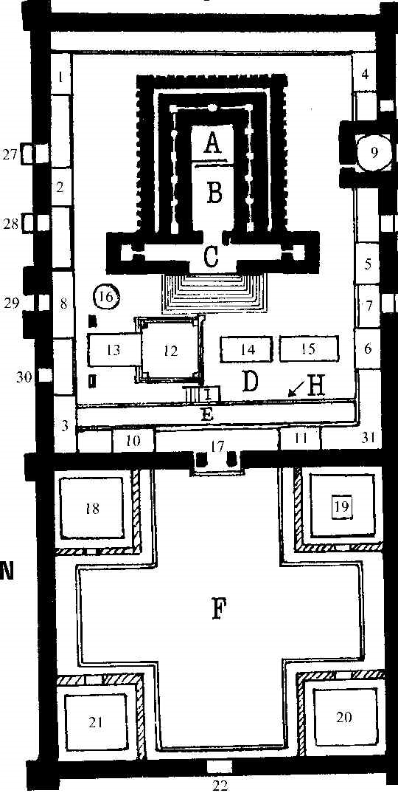
Source: Jacqueline GENOT-BISMUTH, Jérusalem ressuscitée, FX de Guibert, 1992.Chiffres et
lettres en couleur blanche sur fond noir
Présentation géographique du Nouveau Testament EBIOR-2010 p. 80 / 91 Figure 36 Plan détaillé du sanctuaire du Temple Source: Jacques THOMAS, Jérusalem traditionnelle et initiatique, Jean-Cyrille Godefroy,1995
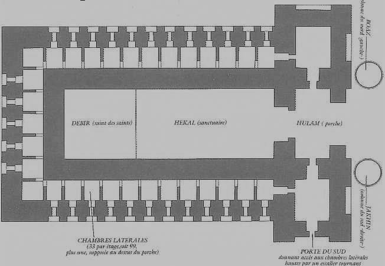
Le Sanctuaire lui-même (20)était composé principalement de trois salles en enfilade:
Le Porche(C) (" Oulam " en hébreu ) de 20 coudées de large sur 10 de profondeur et sur 60 coudées (livre d’Esdras) ou 100 coudées (traité Middoth pour le Temple d’Hérode) en hauteur soit 10 x 5 x 30 ou 50 mètres et un rapport de 2/3/4. C’est le troisième niveau de sacralité, avec l’escalier d’accès de 12 marches et de 3 mètres de dénivellation, s’étendant jusqu’à la limite de l’autel d’un côté et la porte de l’Hekhal de l’autre. Il est fort probable mais non certain qu’une chambre haute existait au-dessus du Porche, dans un massif de façade donnant sa hauteur à l’édifice. Deux colonnes, d’environ 12 mètres de hauteur totale, dont un chapiteau de deux mètres de diamètre étaient placées de chaque côté du porche, en avant de lui et ne supportant rien: Yakhin au sud et Boaz au nord.
Le Saint(B) (" Hekhal " en hébreu) de 20 coudées de large sur 40 de profondeur et sur 30 coudées en hauteur soit 10 x 20 x 15 mètres et un rapport de 1/2/3. Il renfermait en son milieu l’Autel des parfums, revêtu d’or vers le sud, le célèbre chandelier à sept branches représenté sur les basreliefs de l’arc de TITUS à Rome et vers le nord la Table du pain de la Face ou pains de propositions. Ceux-ci, sans levain et au nombre de douze, étaient renouvelés à chaque sabbat comme offrande à Dieu; ils ne pouvaient être mangés que par les prêtres. Cette pièce était fermée par une
Présentation géographique du Nouveau Testament EBIOR-2010 p. 81 / 91 porte à deux ventaux et la lumière du jour y pénétrait par de nombreuses fenêtres.
C’est le deuxième niveau de sacralité, accessible uniquement aux
prêtres désignés pour le service du culte, après purification des mains et des pieds.
Le Saint des Saints(A)(" Debir " en hébreu) de 20 coudées de large sur 20 de profondeur et sur 20 coudées en hauteur soit 10 x 10 x 10 mètres soit un cube parfait plongé dans l’obscurité et un rapport de 1, représentant la plénitude de Dieu. Isolé de l’Hekhal par deux voiles séparés d’une coudée et non par un mur, le Debir était complètement vide lors de sa profanation par le général romain POMPÉE en 63 avant Jésus-Christ et à l’époque d’Hérode. Au contraire, sous SALOMON, il avait abrité l’Arche d’Alliance, où se trouvaient les Tables de la Loi ainsi que deux gigantesques statues de chérubins.
C’est le degré de sacralité maximale (premier degré), accessible
uniquement au grand prêtre, une fois par an à la fête du Yom Kippour, pour y prononcer correctement le nom du Tétragramme divin (YHWH), afin d’obtenir l’expiation de toutes les fautes d’Israël.
Remarquons que le Hekhal et le Debir ont conservé les dimensions exactes du Temple de Salomon (voir dimensions en coudées ci-contre).
Enfin, sur trois côtés s’ouvraient trois étages de chambres, de 5 coudées de hauteur et de largeur croissante selon les étages, soit 5,6 et 7 coudées, dont la reconstitution demeure hypothétique.
Présentation géographique du Nouveau Testament EBIOR-2010 p. 82 / 91
" La voie douloureuse " en latin ou " Chemin de Croix ".
C’est le nom donné à l’itinéraire traditionnel, depuis le Prétoire jusqu’au
Calvaire, qu’emprunta Jésus, portant sa lourde croix, depuis le lieu de son jugement (Mc 15,1-20) jusqu’à celui de sa crucifixion et de son inhumation au Saint Sépulcre (Jn 19,16-22).
Quatorze emplacements marquent les quatorze stations traditionnelles de
Jésus le long de la via Dolorosa, située dans les ruelles de la vieille ville de Jérusalem. Le parcours de cet itinéraire est arbitraire: il se fonde à la fois sur les récits évangéliques pour neuf stations et sur les affirmations de la Tradition pour cinq stations (les trois chutes de Jésus ou la rencontre avec Véronique). De plus le
sol a été surélevé de plusieurs mètres depuis l’époque romaine.
Station Description Source Lieu traditionnel
I Jésus est condamné à mort Jn 19,13-16 Cour de l’école coranique (Antonia)
II Jésus est chargé de la croix Jn 19,16-17 Monastère de la Flagellation (Antonia)
III Jésus tombe pour la première fois Tradition Via Dolorosa
IV Jésus rencontre Marie, sa mère Tradition Via Dolorosa
V Jésus est aidé par Simon de Cyrène Lc 23,26 Via Dolorosa: station de Simon de Cyrène
VI Véronique essuie le visage de Jésus Tradition Via Dolorosa: chapelle sainte Véronique
VII Jésus tombe pour la deuxième fois Tradition Via Dolorosa
Présentation géographique du Nouveau Testament EBIOR-2010 p. 83 / 91
Jésus console les femmes de Jérusalem
Lc 23,27-31 Via Dolorosa
VIII
IX Jésus tombe pour la troisième fois Tradition Via Dolorosa
X Jésus est dépouillé de ses vêtements Jn 19,23-24 Saint-Sépulcre: Golgotha (chapelle catholique)
XI Jésus est mis en croix Mc 15,23-27 Saint-Sépulcre: Golgotha (chapelle catholique)
XII La mort de Jésus Les paroles de Jésus en croix
Saint-Sépulcre: Golgotha (chapelle grecque)
Jésus est descendu de la croix: le côté ouvert
Jn 19,31-34 Saint-Sépulcre: Golgotha (chapelle grecque)
XIII
XIV Jésus est mis au tombeau Lc 23,53-56 Saint-Sépulcre: Tombeau et Anastasis
Au XIIIème siècle, son point de départ a été fixé par la tradition franciscaine sur l’emplacement de l’ancienne forteresse de l’Antonia, recouvert aujourd’hui par le couvent des Sœurs de Sion, dit de l’Ecce Homo (" Voici l’homme " en latin par référence à Jn 19,5), le couvent franciscain de la Flagellation et une école musulmane. D’autres hypothèses, plus récentes, situent le prétoire de Pilate au palais forteresse du roi HÉRODE le Grand, appelé également mais par erreur Tour de David, situé à l’ouest de la vieille ville. Dans ce cas le le chemin de croix serait long de 150 mètres à vol d’oiseau et sortirait par la porte des Jardins, au pied de la tour Hippicos. Cependant aucune tradition ancienne ne s’y rapporte. Ou bien au palais royal des Hasmonéens, situé plus près du Temple et dont l’emplacement est resté longtemps inconnu. Une ancienne tradition de Jérusalem connaît une église du Prétoire, appelée plus tard église Sainte-Sophie, située au nord-est de la célèbre basilique de l’empereur byzantin JUSTINIEN, la Haghia Maria Nea. L’emplacement de cette dernière a été retrouvé en 1970 lors des
Présentation géographique du Nouveau Testament EBIOR-2010 p. 84 / 91 fouilles du quartier juif ce qui a conduit des archéologues à identifier le Prétoire de Pilate avec la belle et grande maison découverte lors de ces mêmes fouilles qui ne serait autre que l’ancien palais royal des rois hasmonéens. Dans ce cas, le chemin de croix, de moins de 500 mètres, passe par l’agora, une sorte de marché public et sort de la ville par la porte de Gennat ou porte du Jardin.
Cependant d’autres archéologues identifient les découvertes avec le palais du grand prêtre Anne et de sa famille, le Beth Hanin.
Toutefois la localisation traditionnelle ne peut pas être entièrement rejetée, avec un prétoire situé au nord de l’Antonia, un chemin de croix de 200 mètres et une sortie par la porte du Crâne (?).
Présentation géographique du Nouveau Testament EBIOR-2010 p. 85 / 91
Universelle, 1998 Atlas biblique du voyageur en Terre sainte, Prions en Eglise, hors série 2007 Atlas géopolitique d'Israël, Autrement, 2008 Terre Sainte, Guide Gallimard Catherine ARNOULD-BEHAR, La Palestine à l'époque romaine, Les Belles Lettres, 2007 Michael AVI-YONAH, Guide illustré de la reconstitution de la Jérusalem antique, Palphot, Israël Sami AWWAD, Cette terre de Dieu, Jérusalem et Namur Carte des pèlerins de la Terre Sainte, Ministère du tourisme d'Israël, Jérusalem Raymond. E.BROWN, Que sait-on du Nouveau Testament?, Bayard, 1997 (édition anglaise) et 2000 (édition française) Hugues COUSIN (direction), Le monde où vivait Jésus, Editions duCerf, 1998 Jacqueline GENOT-BISMUTH, Jérusalem ressuscitée,F.X. de Guibert - Albin Michel, 1992 Guide de Terre Sainte, Routes bibliques, Fayard, 1998 René LAURENTIN, Vie authentique de Jésus-Christ, Fayard, 1996 Victor LOUPAN et Alain NOEL, Enquête sur la mort de Jésus, Presses de la Renaissance,
Présentation géographique du Nouveau Testament EBIOR-2010 p. 86 / 91
Présentation géographique du Nouveau Testament EBIOR-2010 p. 87 / 91
FIGURE 1 TABLEAU DES ALTITUDES 9 FIGURE 2 COUPE DU RELIEF D’OUEST EN EST 11 FIGURE 3 CARTE PHYSIQUE 11 FIGURE 4 TABLEAU KILOMÉTRIQUE DES DISTANCES 12 FIGURE 5 TABLEAU DES TEMPÉRATURES MOYENNES 13 FIGURE 6 CARTE HYGROMÉTRIQUE 15 FIGURE 7 CARTE BIO-GÉOGRAPHIQUE 15 FIGURE 8 DONNÉES MÉTÉOROLOGIQUES SUR JÉRUSALEM 16 FIGURE 9 TEMPÉRATURE DE L'EAU 17 FIGURE 10 CARTE DE L'ASIE MINEURE 21 FIGURE 11 CARTE DES RÉGIONS DU NORD- EST 21 FIGURE 12 PLAN DE L'ÉGLISE DE LA NATIVITÉ 23 FIGURE 13 CARTE DES VILLES DE LA DÉCAPOLE 29 FIGURE14 CARTE DE LA GALILÉE 33 FIGURE 15 VOYAGES AUTOUR DU LAC DE GALILÉE 33 FIGURE16 CARTE DE LA JUDÉE 34 FIGURE 17 CARTE DE LA MACÉDOINE ROMAINE 40 FIGURE 18 MAISON DE MARIE 41 FIGURE 19 CARTE DE LA SAMARIE 46 FIGURE 20 CARTE DE LA SYRIE ROMAINE 48 FIGURE 21 CARTE DE TABGHA 48 FIGURE 22 PREMIER VOYAGE DE SAINT PAUL 53 FIGURE 23 DEUXIÈME VOYAGE DE SAINT PAUL 54 FIGURE 24 TROISIÈME VOYAGE DE SAINT PAUL 55 FIGURE 25 EVOLUTION DU GOLGOTHA 62 FIGURE 26 CARTE DE LA JÉRUSALEM HÉRODIENNE 64 FIGURE 27 LES VALLÉES DE JÉRUSALEM 64 FIGURE 28 SCHÉMA DES MURS DE JÉRUSALEM 65 FIGURE 29 SAINT SÉPULCRE: RÉPARTITION ACTUELLE 68 FIGURE 30 SAINT SÉPULCRE: CONSTRUCTIONS DE CONSTANTIN 69 FIGURE 31 SAINT SÉPULCRE: COUPE EST - OUEST 71 FIGURE 32 PLAN DU TEMPLE SOUS LE ROI HÉRODE 73 FIGURE 33 RECONSTITUTION DU TEMPLE SOUS HÉRODE 74 FIGURE 34 ACCÈS À L'ESPLANADE DU TEMPLE 75 FIGURE 35 PLAN DÉTAILLÉ DU TEMPLE DE JÉRUSALEM 80 FIGURE 36 PLAN DÉTAILLÉ DU SANCTUAIRE DU TEMPLE 81 FIGURE 37 LES STATIONS DE LA VIA DOLOROSA 83
Présentation géographique du Nouveau Testament EBIOR-2010 p. 88 / 91
Abilène............................................... 19 Achaïe................................................ 19 Anne................................................... 57 Antioche............................................. 19 Antonia............................................... 57 Arabie................................................. 20 Arimathée........................................... 20 Asie.................................................... 21 Athènes.............................................. 20
Galatie................................................32 Galiléen..............................................35 Gallicante............................................59 Gaulanitide.........................................36 Géhenne.............................................60 Génésaret...........................................36 Gérasa................................................36 Géraséniens.......................................36 Gethsémani........................................60 Golgotha.............................................62
Batanée.............................................. 21 Béthanie............................................. 22 Bethesda............................................ 58 Bethléem............................................ 23 Bethphagé.......................................... 24 Bethsaïda........................................... 24
Cana................................................... 24 Capharnaüm...................................... 24 Cénacle.............................................. 58 Césarée.............................................. 25 Chypre................................................ 27 Cilicie.................................................. 27 Corinthe.............................................. 27 Cyrène................................................ 28
Jéricho................................................38 Jérusalem...........................................63 Joppé..................................................38 Jourdain..............................................38 Judée..................................................39
Damas................................................ 28 Décapole............................................ 29 Dominus flevit..................................... 59 Dormition............................................ 59
Présentation géographique du Nouveau Testament EBIOR-2010 p. 89 / 91
Samarie..............................................45 Samaritain..........................................47 Sépulcre (Saint)..................................69 Sichem................................................47 Sidon..................................................47 Siloé....................................................71 Sion....................................................72 syrophénicien.....................................48
1.PRESENTATION..........................72 2.ACCÈS À L’ESPLANADE............75 3.DESCRIPTION DES PARVIS......76 Thabor................................................51 Thessalonique....................................52 Tibériade.............................................52 Trachonitide........................................52 Troas..................................................52 Tyr......................................................53
Palestine............................................ 43 Pamphylie.......................................... 44 Pater noster........................................ 68 Pérée.................................................. 44 Philippes............................................. 44 Philistins............................................. 44 Pisidie................................................. 45
Présentation géographique du Nouveau Testament EBIOR-2010 p. 90 / 91
AVANT-PROPOS GÉOGRAPHIQUE DU NOUVEAU TESTAMENT 3
GÉOGRAPHIE PHYSIQUE DE LA TERRE SAINTE 7
Situation 7
Le relief 7 La plaine côtière de la mer méditerranée 7 Les montagnes du centre 7 Le fossé du Jourdain 8 Le plateau jordanien 9
Les données climatiques 12
Considérations supplémentaires 16
GLOSSAIRE GÉOGRAPHIQUE DU NOUVEAU TESTAMENT 19
GLOSSAIRE TOPOGRAPHIQUE DE JÉRUSALEM (NOUVEAU TESTAMENT) 57
BIBLIOGRAPHIE 86
WEBOGRAPHIE 87
TABLE DES CARTES, FIGURES ET ILLUSTRATIONS 88
INDEX ALPHABÉTIQUE 89
TABLE DES MATIÈRES 91
Présentation géographique du Nouveau Testament EBIOR-2010 p. 91 / 91
Hébron Judée + 1000
Mont Ebal Samarie + 938
Mont Garizim Samarie + 880
Mont Nebo Pérée + 802
Jérusalem Judée + 620 à + 820
Mont Thabor Galilée + 588
Mont Carmel Côte + 546
Mont Moré Galilée + 515
Nazareth Galilée + 500
Présentation géographique du Nouveau Testament EBIOR-2010 p. 9 / 91
Décembre 0,4 0 22 95 6,8
TOTAL 2,4 22,4 313 581 39,2
Considérations supplémentaires
En hiver, la neige est rare à Jérusalem mais pas impossible. La température y est déjà
tombée à – 2°C en février et en mars et la température moyenne minimale descend à
6°C.
En comparaison, les chutes de neige ne sont pas exceptionnelles en Galilée et à
Nazareth, il gèle en février en moyenne un jour sur six. L’après-midi, la température
dépasse rarement 10 °C.
Le mois de mars, encore frais, est le plus arrosé de l’année tandis que les premiers
coups de chaleur surviennent en mai (trois jours en moyenne sur le mois), causés par le
Présentation géographique du Nouveau Testament EBIOR-2010 p. 16 / 91
Mer Morte 25 27 22 20
Présentation géographique du Nouveau Testament EBIOR-2010 p. 17 / 91
après Jésus-Christ. ↩
km d’Hébron est une autre localisation possible) identifie ce petit village à ↩
habitants, une cité maritime au carrefour des voies de communication entre ↩
avant Jésus-Christ, elle fut reconstruite à la romaine entre 27 et 12 avant ↩
Présentation géographique du Nouveau Testament EBIOR-2010 p. 53 / 91
et de 135 et qui représente peut-être la première de toutes les églises. Les ↩
Parvis 7 Rocher du Golgotha 11 Tombeau du Christ, chapelle copte et rotonde ↩
et ne fut plus jamais reconstruite. ↩
mètres. Les dimensions de l’Esplanade du Temple d’Hérode ne devaient pas ↩